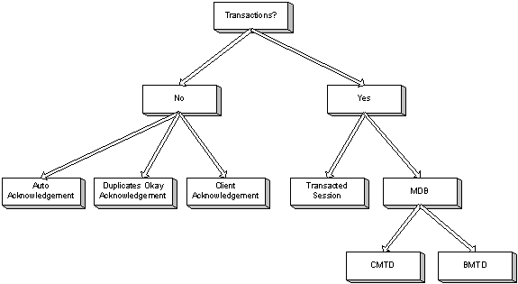
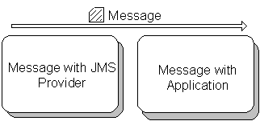
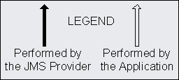
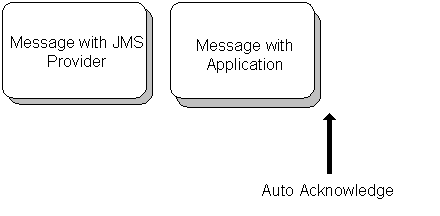
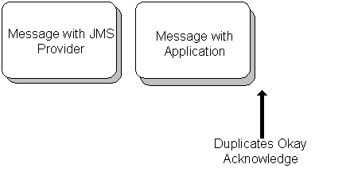
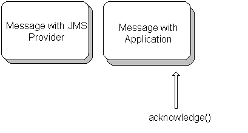
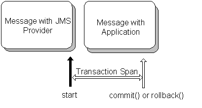
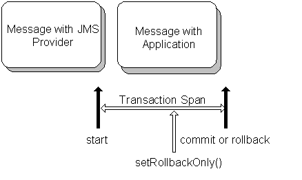
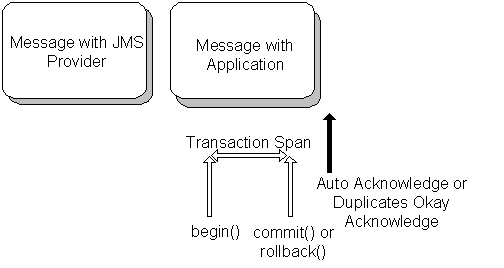

<!DOCTYPE html PUBLIC "-//W3C//DTD HTML 4.0 Transitional//EN">
<html xmlns:v="urn:schemas-microsoft-com:vml"
xmlns:o="urn:schemas-microsoft-com:office:office"
xmlns:w="urn:schemas-microsoft-com:office:word"
xmlns:st1="urn:schemas-microsoft-com:office:smarttags"
xmlns="http://www.w3.org/TR/REC-html40">

<head>
<meta http-equiv=Content-Type content="text/html; charset=windows-1252">
<meta name=ProgId content=Word.Document>
<meta name=Generator content="Microsoft Word 10">
<meta name=Originator content="Microsoft Word 10">
<link rel=File-List href="transaction_and_redelivery_files/filelist.xml">
<link rel=Edit-Time-Data href="transaction_and_redelivery_files/editdata.mso">
<!--[if !mso]>
<style>
v\:* {behavior:url(#default#VML);}
o\:* {behavior:url(#default#VML);}
w\:* {behavior:url(#default#VML);}
.shape {behavior:url(#default#VML);}
</style>
<![endif]-->
<title>Transaction and redelivery in JMS</title>
<o:SmartTagType namespaceuri="urn:schemas-microsoft-com:office:smarttags"
 name="City"/>
<o:SmartTagType namespaceuri="urn:schemas-microsoft-com:office:smarttags"
 name="PlaceName"/>
<o:SmartTagType namespaceuri="urn:schemas-microsoft-com:office:smarttags"
 name="PlaceType"/>
<o:SmartTagType namespaceuri="urn:schemas-microsoft-com:office:smarttags"
 name="place"/>
<o:SmartTagType namespaceuri="urn:schemas-microsoft-com:office:smarttags"
 name="date"/>
<!--[if gte mso 9]><xml>
 <o:DocumentProperties>
  <o:Author>cdomas112805</o:Author>
  <o:LastAuthor>cdomas112805</o:LastAuthor>
  <o:Revision>3</o:Revision>
  <o:TotalTime>2</o:TotalTime>
  <o:Created>2006-01-23T09:28:00Z</o:Created>
  <o:LastSaved>2006-01-23T09:30:00Z</o:LastSaved>
  <o:Pages>1</o:Pages>
  <o:Words>5808</o:Words>
  <o:Characters>33110</o:Characters>
  <o:Company>SOCIETE GENERALE</o:Company>
  <o:Lines>275</o:Lines>
  <o:Paragraphs>77</o:Paragraphs>
  <o:CharactersWithSpaces>38841</o:CharactersWithSpaces>
  <o:Version>10.6735</o:Version>
 </o:DocumentProperties>
</xml><![endif]--><!--[if gte mso 9]><xml>
 <w:WordDocument>
  <w:SpellingState>Clean</w:SpellingState>
  <w:GrammarState>Clean</w:GrammarState>
  <w:BrowserLevel>MicrosoftInternetExplorer4</w:BrowserLevel>
 </w:WordDocument>
</xml><![endif]--><!--[if !mso]><object
 classid="clsid:38481807-CA0E-42D2-BF39-B33AF135CC4D" id=ieooui></object>
<style>
st1\:*{behavior:url(#ieooui) }
</style>
<![endif]-->
<style>
<!--
 /* Font Definitions */
 @font-face
	{font-family:Wingdings;
	panose-1:5 0 0 0 0 0 0 0 0 0;
	mso-font-charset:2;
	mso-generic-font-family:auto;
	mso-font-pitch:variable;
	mso-font-signature:0 268435456 0 0 -2147483648 0;}
@font-face
	{font-family:Verdana;
	panose-1:2 11 6 4 3 5 4 4 2 4;
	mso-font-charset:0;
	mso-generic-font-family:swiss;
	mso-font-pitch:variable;
	mso-font-signature:536871559 0 0 0 415 0;}
 /* Style Definitions */
 p.MsoNormal, li.MsoNormal, div.MsoNormal
	{mso-style-parent:"";
	margin:0in;
	margin-bottom:.0001pt;
	mso-pagination:widow-orphan;
	font-size:12.0pt;
	font-family:"Times New Roman";
	mso-fareast-font-family:"Times New Roman";
	color:black;}
h1
	{mso-margin-top-alt:auto;
	margin-right:0in;
	mso-margin-bottom-alt:auto;
	margin-left:0in;
	mso-pagination:widow-orphan;
	mso-outline-level:1;
	font-size:24.0pt;
	font-family:"Times New Roman";
	color:black;
	font-weight:bold;}
h3
	{mso-margin-top-alt:auto;
	margin-right:0in;
	mso-margin-bottom-alt:auto;
	margin-left:0in;
	mso-pagination:widow-orphan;
	mso-outline-level:3;
	font-size:13.5pt;
	font-family:"Times New Roman";
	color:black;
	font-weight:bold;}
a:link, span.MsoHyperlink
	{color:#990033;
	text-decoration:underline;
	text-underline:single;}
a:visited, span.MsoHyperlinkFollowed
	{color:#990033;
	text-decoration:underline;
	text-underline:single;}
p
	{mso-margin-top-alt:auto;
	margin-right:0in;
	mso-margin-bottom-alt:auto;
	margin-left:0in;
	mso-pagination:widow-orphan;
	font-size:12.0pt;
	font-family:"Times New Roman";
	mso-fareast-font-family:"Times New Roman";
	color:black;}
code
	{mso-ansi-font-size:13.0pt;
	mso-bidi-font-size:13.0pt;
	font-family:"Courier New";
	mso-ascii-font-family:"Courier New";
	mso-fareast-font-family:"Times New Roman";
	mso-hansi-font-family:"Courier New";
	mso-bidi-font-family:"Courier New";}
pre
	{margin:0in;
	margin-bottom:.0001pt;
	mso-pagination:widow-orphan;
	tab-stops:45.8pt 91.6pt 137.4pt 183.2pt 229.0pt 274.8pt 320.6pt 366.4pt 412.2pt 458.0pt 503.8pt 549.6pt 595.4pt 641.2pt 687.0pt 732.8pt;
	font-size:12.0pt;
	font-family:"Courier New";
	mso-fareast-font-family:"Times New Roman";
	color:black;}
span.SpellE
	{mso-style-name:"";
	mso-spl-e:yes;}
span.GramE
	{mso-style-name:"";
	mso-gram-e:yes;}
@page Section1
	{size:8.5in 11.0in;
	margin:1.0in 1.25in 1.0in 1.25in;
	mso-header-margin:.5in;
	mso-footer-margin:.5in;
	mso-paper-source:0;}
div.Section1
	{page:Section1;}
 /* List Definitions */
 @list l0
	{mso-list-id:1039739220;
	mso-list-template-ids:-1865111960;}
@list l0:level1
	{mso-level-number-format:bullet;
	mso-level-text:\F0B7;
	mso-level-tab-stop:.5in;
	mso-level-number-position:left;
	text-indent:-.25in;
	mso-ansi-font-size:10.0pt;
	font-family:Symbol;}
@list l0:level2
	{mso-level-number-format:bullet;
	mso-level-text:o;
	mso-level-tab-stop:1.0in;
	mso-level-number-position:left;
	text-indent:-.25in;
	mso-ansi-font-size:10.0pt;
	font-family:"Courier New";
	mso-bidi-font-family:"Times New Roman";}
@list l1
	{mso-list-id:1267999054;
	mso-list-template-ids:-1375454192;}
@list l1:level1
	{mso-level-number-format:bullet;
	mso-level-text:\F0B7;
	mso-level-tab-stop:.5in;
	mso-level-number-position:left;
	text-indent:-.25in;
	mso-ansi-font-size:10.0pt;
	font-family:Symbol;}
@list l2
	{mso-list-id:1445618220;
	mso-list-template-ids:-1024450420;}
@list l2:level1
	{mso-level-number-format:bullet;
	mso-level-text:\F0B7;
	mso-level-tab-stop:.5in;
	mso-level-number-position:left;
	text-indent:-.25in;
	mso-ansi-font-size:10.0pt;
	font-family:Symbol;}
@list l3
	{mso-list-id:1994606341;
	mso-list-template-ids:-1627898372;}
@list l3:level1
	{mso-level-number-format:bullet;
	mso-level-text:\F0B7;
	mso-level-tab-stop:.5in;
	mso-level-number-position:left;
	text-indent:-.25in;
	mso-ansi-font-size:10.0pt;
	font-family:Symbol;}
ol
	{margin-bottom:0in;}
ul
	{margin-bottom:0in;}
-->
</style>
<!--[if gte mso 10]>
<style>
 /* Style Definitions */
 table.MsoNormalTable
	{mso-style-name:"Table Normal";
	mso-tstyle-rowband-size:0;
	mso-tstyle-colband-size:0;
	mso-style-noshow:yes;
	mso-style-parent:"";
	mso-padding-alt:0in 5.4pt 0in 5.4pt;
	mso-para-margin:0in;
	mso-para-margin-bottom:.0001pt;
	mso-pagination:widow-orphan;
	font-size:10.0pt;
	font-family:"Times New Roman";}
</style>
<![endif]-->
<meta name=keywords
content=" Java Message Service, JMS, Transactions, Enterprise JavaBeans, EJBs, Message Driven Beans, MDBs, begin, commit, rollback, Redelivery, Container Managed Transaction Demarcation, CMTD, Bean Managed Transaction Demarcation, BMTD, Acknowledgement, Session">
<meta name=description
content="During architecture, design, and implementation, you must carefully consider using Java Message Service's (JMS) various transaction options.  For a simple approach, you wouldn't use transactions; instead you would use acknowledgement modes, such as automatic, duplicates okay, and client. Another option uses transacted session for sending and receiving messages.  Message-driven beans (MDBs) with container-managed transaction demarcation (CMTD) or with bean-managed transaction demarcation (BMTD) provides yet another alternative. This article clearly presents the available transaction options and carefully considers these options' impact on message redelivery.  You'll gain a better knowledge of using JMS efficiently and effectively. (3,000 words; March 15, 2002)">
<meta name=GOOGLEBOT content=NOARCHIVE>

<script language="JavaScript">
            <!--
            function openBrWindow() {
                win=window.open("http://www.javaworld.com/channel_content/jw-story-feedback.shtml",'Feedback','width=600,height=330,toolbar=no,location=no,directories=no,menubar=no,scrollbars=yes,resizable=yes');
            }
            -->
</script>
<!--[if gte mso 9]><xml>
 <o:shapedefaults v:ext="edit" spidmax="2050"/>
</xml><![endif]--><!--[if gte mso 9]><xml>
 <o:shapelayout v:ext="edit">
  <o:idmap v:ext="edit" data="1"/>
 </o:shapelayout></xml><![endif]-->
</head>

<body bgcolor=white lang=EN-US link="#990033" vlink="#990033" style='tab-interval:
.5in' topmargin=0 leftmargin=0 rightmargin=0 bottommargin=0 alink="#990033"
marginheight=0 marginwidth=0>

<div class=Section1>

<div align=center>

<table class=MsoNormalTable border=0 cellspacing=0 cellpadding=0 width="100%"
 style='width:100.0%;mso-cellspacing:0in;mso-padding-alt:0in 0in 0in 0in'>
 <tr style='mso-yfti-irow:0;mso-yfti-lastrow:yes'>
  <td width=186 style='width:139.5pt;background:#006699;padding:0in 0in 0in 0in'>
  <p class=MsoNormal><span style='font-size:11.0pt'><a
  href="http://www.javaworld.com/"><span style='text-decoration:none;
  text-underline:none'></span></a><o:p></o:p></span></p>
  </td>
  <td width=1054 style='width:790.5pt;background:#CCCCCC;padding:0in 0in 0in 0in'><!-- START TOP 728x90 BANNER jw-articles-top-ad.txt  -->
  <p class=MsoNormal align=center style='text-align:center'><span
  style='font-size:11.0pt'><o:p>&nbsp;</o:p></span></p>
  </td>
 </tr>
</table>

</div>

<p class=MsoNormal><span style='font-size:10.0pt;font-family:Verdana;
display:none;mso-hide:all'><o:p>&nbsp;</o:p></span></p>

<div align=center>

<table class=MsoNormalTable border=0 cellspacing=0 cellpadding=0 width="100%"
 style='width:100.0%;mso-cellspacing:0in;mso-padding-alt:0in 0in 0in 0in'>
 <tr style='mso-yfti-irow:0;mso-yfti-lastrow:yes'>
  <td width=160 style='width:120.0pt;background:#006699;padding:0in 0in 0in 0in'>
  <p class=MsoNormal><span style='font-size:11.0pt'><o:p></o:p></span></p>
  </td>
  <td width=26 valign=top style='width:19.5pt;background:white;padding:0in 0in 0in 0in'>
  <p class=MsoNormal><span style='font-size:11.0pt'><o:p></o:p></span></p>
  </td>
  <td width="100%" style='width:100.0%;padding:0in 0in 0in 0in'>
  <p class=MsoNormal><span style='font-size:11.0pt'><o:p></o:p></span></p>
  </td>
 </tr>
</table>

</div>

<p class=MsoNormal><span style='font-size:10.0pt;font-family:Verdana;
display:none;mso-hide:all'><o:p>&nbsp;</o:p></span></p>

<div align=center>

<table class=MsoNormalTable border=0 cellspacing=0 cellpadding=0 width="100%"
 style='width:100.0%;mso-cellspacing:0in;mso-padding-alt:0in 0in 0in 0in'>
 <tr style='mso-yfti-irow:0;mso-yfti-lastrow:yes'>
  <td width=160 nowrap style='width:120.0pt;background:#006699;padding:0in 0in 0in 0in'><nobr>
  <p class=MsoNormal align=center style='text-align:center'><span
  style='font-size:7.5pt;font-family:Verdana;color:white'>March 2002</span><span
  style='font-size:11.0pt'></nobr><o:p></o:p></span></p>
  </td>
  <td width=10 style='width:.1in;padding:0in 0in 0in 0in'>
  <p class=MsoNormal><span style='font-size:11.0pt'><o:p></o:p></span></p>
  </td>
  <td width=10 valign=top style='width:.1in;background:#006699;padding:0in 0in 0in 0in'>
  <p class=MsoNormal><span style='font-size:11.0pt'><o:p></o:p></span></p>
  </td>
  <td width="100%" style='width:100.0%;background:#006699;padding:0in 0in 0in 0in'>
  <div align=center>
  <table class=MsoNormalTable border=0 cellspacing=0 cellpadding=0 width="100%"
   style='width:100.0%;mso-cellspacing:0in;mso-padding-alt:3.75pt 3.75pt 3.75pt 3.75pt'>
   <tr style='mso-yfti-irow:0;mso-yfti-lastrow:yes'>
    <td style='background:#006699;padding:3.75pt 3.75pt 3.75pt 3.75pt'>
    <p class=MsoNormal align=center style='text-align:center'><span
    style='font-size:11.0pt'><a href="http://www.javaworld.com/"><span
    style='font-size:7.5pt;font-family:Verdana;color:white'>HOME</span></a><o:p></o:p></span></p>
    </td>
    <td style='background:#006699;padding:3.75pt 3.75pt 3.75pt 3.75pt'>
    <p class=MsoNormal align=center style='text-align:center'><span
    style='font-size:11.0pt'><a
    href="http://www.javaworld.com/features/index.shtml"><span
    style='font-size:7.5pt;font-family:Verdana;color:white'>FEATURED TUTORIALS</span></a><o:p></o:p></span></p>
    </td>
    <td style='background:#006699;padding:3.75pt 3.75pt 3.75pt 3.75pt'>
    <p class=MsoNormal align=center style='text-align:center'><span
    style='font-size:11.0pt'><a
    href="http://www.javaworld.com/columns/index.shtml"><span style='font-size:
    7.5pt;font-family:Verdana;color:white'>COLUMNS</span></a><o:p></o:p></span></p>
    </td>
    <td style='background:#006699;padding:3.75pt 3.75pt 3.75pt 3.75pt'>
    <p class=MsoNormal align=center style='text-align:center'><span
    style='font-size:11.0pt'><a
    href="http://www.javaworld.com/news-reviews/index.shtml"><span
    style='font-size:7.5pt;font-family:Verdana;color:white'>NEWS &amp; REVIEWS</span></a><o:p></o:p></span></p>
    </td>
    <td style='background:#006699;padding:3.75pt 3.75pt 3.75pt 3.75pt'>
    <p class=MsoNormal align=center style='text-align:center'><span
    style='font-size:11.0pt'><a href="http://www.javaworld.com/javaforums/"><span
    style='font-size:7.5pt;font-family:Verdana;color:white'>FORUM</span></a><o:p></o:p></span></p>
    </td>
    <td style='background:#006699;padding:3.75pt 3.75pt 3.75pt 3.75pt'>
    <p class=MsoNormal align=center style='text-align:center'><span
    style='font-size:11.0pt'><a
    href="http://www.javaworld.com/resources/index.shtml"><span
    style='font-size:7.5pt;font-family:Verdana;color:white'>JW RESOURCES</span></a><o:p></o:p></span></p>
    </td>
    <td style='background:#006699;padding:3.75pt 3.75pt 3.75pt 3.75pt'>
    <p class=MsoNormal align=center style='text-align:center'><span
    style='font-size:11.0pt'><a
    href="http://www.javaworld.com/info/jw-about-index.shtml"><span
    style='font-size:7.5pt;font-family:Verdana;color:white'>ABOUT JW</span></a><o:p></o:p></span></p>
    </td>
   </tr>
  </table>
  </div>
  <p class=MsoNormal align=center style='text-align:center'><span
  style='font-size:11.0pt'><o:p></o:p></span></p>
  </td>
  <td width=10 valign=top style='width:.1in;background:#006699;padding:0in 0in 0in 0in'>
  <p class=MsoNormal align=right style='text-align:right'><span
  style='font-size:11.0pt'><o:p></o:p></span></p>
  </td>
  <td width=10 style='width:.1in;padding:0in 0in 0in 0in'>
  <p class=MsoNormal><span style='font-size:11.0pt'><o:p></o:p></span></p>
  </td>
 </tr>
</table>

</div>

<p class=MsoNormal><span style='font-size:10.0pt;font-family:Verdana'><!--        <table align="center" width="100%" cellspacing="0" cellpadding="0" border="0">
            <tr valign="top">
                <td bgcolor="#006699" width="160" align="middle" valign="top">
                    <table width="160" border="0" cellspacing="0" cellpadding="0" bgcolor="#006699" summary=""> --><!-- #include snippets/jw-search-snippet.txt --><!--     <tr>
                            <td width="8"></td>
                            <td><br>
                                <font face="Verdana,Geneva,Arial,Helvetica,sans-serif" size="1" color="#ffffff"><strong>ARCHIVE</strong></font><br>
                                <br>
                                <strong><a href="http://www.javaworld.com/channel_content/jw-topical-index.shtml"><font face="Verdana,Geneva,Arial,Helvetica,sans-serif" size="1" color="#ffffff">TOPICAL INDEX</font></a></strong></font><br>--><!-- #include snippets/jw-topical-generic.txt --><!--                         <br>
                                <font face="Verdana,Geneva,Arial,Helvetica,sans-serif" size="1" color="#ffffff"><strong>FREE JAVAWORLD NEWSLETTERS</strong></font><br>
                                 <br></td>
                            <td width="8"></td>
                        </tr>
                        <tr valign="bottom">
                            <td width="8"></td>
                            <td> </td>
                            <td width="8"></td>
                        </tr>
                        <tr>
                            <td width="8" bgcolor="#cccccc"> </td>
                            <td bgcolor="#cccccc"> </td>
                            <td width="8" bgcolor="#cccccc"> </td>
                        </tr>
                        <tr>
                       <td width="8" bgcolor="#cccccc"></td>
                           <td align="middle" bgcolor="#cccccc">  --><!-- #include snippets/jw-articles-left-ad.txt --><!--      </td>
                       <td width="8" bgcolor="#cccccc"></td>
                        </tr>
                        <tr>
                            <td width="8" bgcolor="#cccccc"> </td>
                            <td bgcolor="#cccccc"> </td>
                            <td width="8" bgcolor="#cccccc"> </td>
                        </tr>
                        <tr valign="top">
                            <td width="8"></td>
                            <td> </td>
                            <td width="8"></td>
                        </tr>
                    </table> --><o:p></o:p></span></p>

<!-- ## MAIN CONTENT STARTS HERE ### -->

<h1 align=center style='text-align:center'><span style='font-size:10.0pt;
font-family:Verdana'>Transaction and redelivery in JMS </span><span
style='font-family:Verdana'><o:p></o:p></span></h1>

<h3 align=center style='text-align:center'><span style='font-size:10.0pt;
font-family:Verdana'>Make the right transaction decision for your message
delivery </span><span style='font-family:Verdana'><o:p></o:p></span></h3>

<blockquote style='margin-top:5.0pt;margin-bottom:5.0pt'>

<p class=MsoNormal><strong><span style='font-size:10.0pt;font-family:Verdana'><!--<BLOCKQUOTE><STRONG>Summary</STRONG><BR>-->Summary</span></strong><span
style='font-size:10.0pt;font-family:Verdana'><br>
During architecture, design, and implementation, you must carefully consider
using Java Message Service's (JMS) various transaction options. For a simple
approach, you wouldn't use transactions; instead you would use acknowledgement
modes, such as automatic, duplicates okay, and client. Another option uses
transacted session for sending and receiving messages. <span class=GramE>Message-driven
beans (<span class=SpellE>MDBs</span>) with container-managed transaction
demarcation (CMTD) or with bean-managed transaction demarcation (BMTD) provides</span>
yet another alternative. This article clearly presents the available
transaction options and carefully considers these options' impact on message
redelivery. You'll gain a better knowledge of using JMS efficiently and
effectively. (<em><span style='font-family:Verdana'>3,000 words;</span></em> </span><st1:date
Year="2002" Day="15" Month="3"><strong><span style='font-size:10.0pt;
 font-family:Verdana'>March 15, 2002</span></strong></st1:date><span
style='font-size:10.0pt;font-family:Verdana'>) <o:p></o:p></span></p>

</blockquote>

<p class=MsoNormal><strong><span style='font-size:10.0pt;font-family:Verdana'><!--</BLOCKQUOTE>-->By
<span class=SpellE>Prakash</span> <span class=SpellE>Malani</span> </span></strong><span
style='font-size:10.0pt;font-family:Verdana'><o:p></o:p></span></p>

<p><span style='font-size:10.0pt;font-family:Verdana'><o:p></o:p></span></p>

<p><span style='font-size:10.0pt;font-family:Verdana'><o:p>&nbsp;</o:p></span></p>

<p><!--[if gte vml 1]><v:shapetype id="_x0000_t75" coordsize="21600,21600"
 o:spt="75" o:preferrelative="t" path="m@4@5l@4@11@9@11@9@5xe" filled="f"
 stroked="f">
 <v:stroke joinstyle="miter"/>
 <v:formulas>
  <v:f eqn="if lineDrawn pixelLineWidth 0"/>
  <v:f eqn="sum @0 1 0"/>
  <v:f eqn="sum 0 0 @1"/>
  <v:f eqn="prod @2 1 2"/>
  <v:f eqn="prod @3 21600 pixelWidth"/>
  <v:f eqn="prod @3 21600 pixelHeight"/>
  <v:f eqn="sum @0 0 1"/>
  <v:f eqn="prod @6 1 2"/>
  <v:f eqn="prod @7 21600 pixelWidth"/>
  <v:f eqn="sum @8 21600 0"/>
  <v:f eqn="prod @7 21600 pixelHeight"/>
  <v:f eqn="sum @10 21600 0"/>
 </v:formulas>
 <v:path o:extrusionok="f" gradientshapeok="t" o:connecttype="rect"/>
 <o:lock v:ext="edit" aspectratio="t"/>
</v:shapetype><v:shape id="_x0000_s1026" type="#_x0000_t75" alt="A" style='position:absolute;
 margin-left:0;margin-top:0;width:22.5pt;height:21pt;z-index:1;
 mso-wrap-distance-left:0;mso-wrap-distance-right:0;mso-position-horizontal:left;
 mso-position-vertical-relative:line' o:allowoverlap="f">
 <v:imagedata src="transaction_and_redelivery_fichiers/A.gif"/>
 <w:wrap type="square"/>
</v:shape><![endif]--><![if !vml]><![endif]><span
style='font-size:10.0pt;font-family:Verdana;mso-no-proof:yes'><!-- #include snippets/jw-articles-336x280.txt --></span><span
class=SpellE><span class=GramE><span style='font-size:10.0pt;font-family:Verdana'>rchitecting</span></span></span><span
style='font-size:10.0pt;font-family:Verdana'> and designing applications with
the Java Message Service (JMS) requires not only knowing how to use the JMS
API, but also having a solid foundation of its concepts. This article focuses
on two such powerful concepts: <em><span style='font-family:Verdana'>transaction</span></em>
and <em><span style='font-family:Verdana'>redelivery</span></em>. In JMS, a
transaction organizes a message or message group into an atomic processing
unit; failure to deliver a message may result in redelivery of that message or
message group. <o:p></o:p></span></p>

<p><span style='font-size:10.0pt;font-family:Verdana'>In this article, I help
you develop a thorough understanding of your transaction options and show how
you can evaluate their impact on message redelivery. I assume you have some
familiarity with the JMS API as well as message-driven beans (<span
class=SpellE>MDBs</span>). <o:p></o:p></span></p>

<p><strong><span style='font-family:Verdana'>Transaction option overview </span></strong><span
style='font-size:10.0pt;font-family:Verdana'><br>
An application has myriad transaction options available, including whether or
not it wants to participate in transactions. If your application does not use
transactions, it can use one of these acknowledgement modes: auto, duplicates
okay, and client. You specify the acknowledgement modes when creating a JMS
session. If your application uses transactions, it can choose from these
transaction options: transacted session, MDB with container-managed transaction
demarcation (CMTD), and MDB with bean-managed transaction demarcation (BMTD).
The following lists briefly describe these acknowledgement modes and
transaction options. <o:p></o:p></span></p>

<p><strong><span style='font-size:10.0pt;font-family:Verdana'>Acknowledgement
options:</span></strong><span style='font-size:10.0pt;font-family:Verdana'><o:p></o:p></span></p>

<ul type=disc>
 <li class=MsoNormal style='mso-margin-top-alt:auto;mso-margin-bottom-alt:auto;
     mso-list:l2 level1 lfo1;tab-stops:list .5in'><strong><span
     style='font-size:10.0pt;font-family:Verdana'>Auto mode:</span></strong><span
     style='font-size:10.0pt;font-family:Verdana'> When a session uses auto
     mode, the messages sent or received from the session are automatically
     acknowledged. This is the simplest mode and expresses JMS's power by
     enabling once-only message delivery guarantee. <o:p></o:p></span></li>
 <li class=MsoNormal style='mso-margin-top-alt:auto;mso-margin-bottom-alt:auto;
     mso-list:l2 level1 lfo1;tab-stops:list .5in'><strong><span
     style='font-size:10.0pt;font-family:Verdana'>Duplicates okay mode:</span></strong><span
     style='font-size:10.0pt;font-family:Verdana'> When a session uses
     duplicates okay mode, the messages sent or received from the session are
     automatically acknowledged just like auto mode, albeit lazily. Under rare
     circumstances, the messages might be delivered more than once. This mode
     enables at-least-once message delivery guarantee. <o:p></o:p></span></li>
 <li class=MsoNormal style='mso-margin-top-alt:auto;mso-margin-bottom-alt:auto;
     mso-list:l2 level1 lfo1;tab-stops:list .5in'><strong><span
     style='font-size:10.0pt;font-family:Verdana'>Client mode:</span></strong><span
     style='font-size:10.0pt;font-family:Verdana'> When a session uses client
     mode, the messages sent or received from the session are not acknowledged
     automatically. The application must acknowledge the message receipt. This
     mode gives the application (rather than the JMS provider) complete control
     over message acknowledgement, at the cost of increased code complexity.<o:p></o:p></span></li>
</ul>

<p><span style='font-size:10.0pt;font-family:Verdana'>Other types of
acknowledgement modes are possible. However, these acknowledgement modes are
JMS provider specific, and therefore, compromise the JMS application
portability. <o:p></o:p></span></p>

<p><strong><span style='font-size:10.0pt;font-family:Verdana'>Transaction
options:</span></strong><span style='font-size:10.0pt;font-family:Verdana'><o:p></o:p></span></p>

<ul type=disc>
 <li class=MsoNormal style='mso-margin-top-alt:auto;mso-margin-bottom-alt:auto;
     mso-list:l3 level1 lfo2;tab-stops:list .5in'><strong><span
     style='font-size:10.0pt;font-family:Verdana'>Transacted session:</span></strong><span
     style='font-size:10.0pt;font-family:Verdana'> An application can
     participate in a transaction by creating a transacted session (or local
     transaction). The application completely controls the message delivery by
     either committing or rolling back the session. <o:p></o:p></span></li>
 <li class=MsoNormal style='mso-margin-top-alt:auto;mso-margin-bottom-alt:auto;
     mso-list:l3 level1 lfo2;tab-stops:list .5in'><strong><span
     style='font-size:10.0pt;font-family:Verdana'>Message-driven beans with
     CMTD:</span></strong><span style='font-size:10.0pt;font-family:Verdana'>
     An MDB can participate in a container transaction by specifying CMTD in
     the XML deployment descriptor. The transaction commits upon successful
     message processing or the application can explicitly roll it back. <o:p></o:p></span></li>
 <li class=MsoNormal style='mso-margin-top-alt:auto;mso-margin-bottom-alt:auto;
     mso-list:l3 level1 lfo2;tab-stops:list .5in'><strong><span
     style='font-size:10.0pt;font-family:Verdana'>Message-driven beans with
     BMTD:</span></strong><span style='font-size:10.0pt;font-family:Verdana'>
     An MDB can choose not to participate in a container transaction by
     specifying BMTD in the XML deployment descriptor. The MDB programmer has
     to design and code programmatic transactions.<o:p></o:p></span></li>
</ul>

<p><span style='font-size:10.0pt;font-family:Verdana'>Figure 1 depicts a
decision tree of the previously mentioned transaction options. <o:p></o:p></span></p>

<div align=center>

<table class=MsoNormalTable border=0 cellpadding=0 style='mso-cellspacing:1.5pt;
 mso-padding-alt:3.75pt 3.75pt 3.75pt 3.75pt'>
 <tr style='mso-yfti-irow:0;mso-yfti-lastrow:yes'>
  <td style='padding:3.75pt 3.75pt 3.75pt 3.75pt'>
  <p align=center style='text-align:center'><span style='font-size:11.0pt'><o:p></o:p></span></p>
  <p align=center style='text-align:center'><span style='font-size:11.0pt'><o:p>&nbsp;</o:p></span></p>
  <p align=center style='text-align:center'><strong><span style='font-size:
  7.5pt'>Figure 1. Transaction options decision tree </span></strong><span
  style='font-size:11.0pt'><o:p></o:p></span></p>
  </td>
 </tr>
</table>

</div>

<p><span style='font-size:10.0pt;font-family:Verdana'>Before studying the
transaction options in detail, we'll explore the message delivery process. <o:p></o:p></span></p>

<p><strong><span style='font-family:Verdana'>Message delivery stages </span></strong><span
style='font-size:10.0pt;font-family:Verdana'><br>
Toward the end of delivery, the message conceptually passes through the following
stages: message with JMS provider and message in application processing. <o:p></o:p></span></p>

<p><strong><span style='font-size:10.0pt;font-family:Verdana'>Message with JMS
provider </span></strong><span style='font-size:10.0pt;font-family:Verdana'><br>
In this stage, the message stays with the JMS provider just before the provider
delivers it to the application. Consider a catastrophic situation where the JMS
provider fails. What happens to the messages that the provider has not yet
delivered to the client? Will the messages be lost? <o:p></o:p></span></p>

<p><span style='font-size:10.0pt;font-family:Verdana'>The messages' fate
depends not upon the transaction options outlined earlier, but rather upon the
delivery mode. There are two delivery modes: <span class=SpellE><em><span
style='font-family:Verdana'>nonpersistent</span></em></span> and <em><span
style='font-family:Verdana'>persistent</span></em>. Messages with <span
class=SpellE>nonpersistent</span> delivery modes are potentially lost if the
JMS provider fails. Messages with persistent delivery modes are logged and
stored to a stable storage. The JMS provider saves these messages to a stable
storage, such as a database or a file system, and eventually delivers them to
the application for processing. <o:p></o:p></span></p>

<p><strong><span style='font-size:10.0pt;font-family:Verdana'>Message in
application processing </span></strong><span style='font-size:10.0pt;
font-family:Verdana'><br>
In this stage, the application receives the message from the JMS provider and
processes it. Consider a failure occurring during message processing. What
happens to the message? Will the message be lost or redelivered for successful
processing later? The answers to these questions depend upon the transaction
options you choose. <o:p></o:p></span></p>

<p><span style='font-size:10.0pt;font-family:Verdana'>Figure 2 depicts the two
processing stages. The diagram shows that a message moves from the JMS provider
to application processing. <o:p></o:p></span></p>

<div align=center>

<table class=MsoNormalTable border=0 cellpadding=0 style='mso-cellspacing:1.5pt;
 mso-padding-alt:3.75pt 3.75pt 3.75pt 3.75pt'>
 <tr style='mso-yfti-irow:0;mso-yfti-lastrow:yes'>
  <td style='padding:3.75pt 3.75pt 3.75pt 3.75pt'>
  <p align=center style='text-align:center'><span style='font-size:11.0pt'><o:p></o:p></span></p>
  <p align=center style='text-align:center'><span style='font-size:11.0pt'><o:p>&nbsp;</o:p></span></p>
  <p align=center style='text-align:center'><strong><span style='font-size:
  7.5pt'>Figure 2. Message delivery stages </span></strong><span
  style='font-size:11.0pt'><o:p></o:p></span></p>
  </td>
 </tr>
</table>

</div>

<p><span style='font-size:10.0pt;font-family:Verdana'>Throughout the remainder
of the article, I use the action legend shown in Figure 3 to illustrate the
different transaction options. As Figure 3 shows, a filled arrow depicts a JMS
provider-performed action, whereas an outlined arrow depicts an
application-performed action. <o:p></o:p></span></p>

<div align=center>

<table class=MsoNormalTable border=0 cellpadding=0 style='mso-cellspacing:1.5pt;
 mso-padding-alt:3.75pt 3.75pt 3.75pt 3.75pt'>
 <tr style='mso-yfti-irow:0;mso-yfti-lastrow:yes'>
  <td style='padding:3.75pt 3.75pt 3.75pt 3.75pt'>
  <p align=center style='text-align:center'><span style='font-size:11.0pt'><o:p></o:p></span></p>
  <p align=center style='text-align:center'><span style='font-size:11.0pt'><o:p>&nbsp;</o:p></span></p>
  <p align=center style='text-align:center'><strong><span style='font-size:
  7.5pt'>Figure 3. Action legend </span></strong><span style='font-size:11.0pt'><o:p></o:p></span></p>
  </td>
 </tr>
</table>

</div>

<p><!-- break --><strong><span style='font-family:Verdana'>The setup </span></strong><span
style='font-size:10.0pt;font-family:Verdana'><br>
To demonstrate the impact of various transaction options as well as redelivery,
I will use one sender. The sender sends simple integers as object messages to a
queue. Each transaction option has a different receiver. Each receiver
demonstrates the impact of choosing a particular transaction option as well as
highlights the impact on message redelivery. The sender and receivers utilize
common administered objects: connection factory and queue. The connection
factory is available using the Java Naming and Directory Interface (JNDI) name </span><span
class=SpellE><code><span style='font-size:11.0pt'>jms/QueueConnectionFactory</span></code></span><span
style='font-size:10.0pt;font-family:Verdana'>, whereas the queue is available
using the </span><span class=SpellE><code><span style='font-size:11.0pt'>jms</span></code></span><code><span
style='font-size:11.0pt'>/Queue</span></code><span style='font-size:10.0pt;
font-family:Verdana'> JNDI name. <o:p></o:p></span></p>

<p><span style='font-size:10.0pt;font-family:Verdana'>Listing 1 shows the code
for the sender: <o:p></o:p></span></p>

<p><span class=GramE><strong><span style='font-size:10.0pt;font-family:Verdana'>Listing
1.</span></strong></span><strong><span style='font-size:10.0pt;font-family:
Verdana'> Sender</span></strong><span style='font-size:10.0pt;font-family:Verdana'><o:p></o:p></span></p>

<p><span style='font-size:10.0pt;font-family:Verdana'>package <span
class=SpellE>com.malani.examples.jms.transactions</span>;<br>
<br>
import <span class=SpellE>javax.naming.InitialContext</span>;<br>
import <span class=SpellE>javax.jms</span>.*;<br>
<br>
public class Sender {<br>
&nbsp;&nbsp;&nbsp;&nbsp;public static void main(String[] <span class=SpellE>args</span>)
{<br>
&nbsp;&nbsp;&nbsp;&nbsp;&nbsp;&nbsp;&nbsp;&nbsp;<span class=SpellE>System.out.println</span>(&quot;Starting...&quot;);<br>
<br>
&nbsp;&nbsp;&nbsp;&nbsp;&nbsp;&nbsp;&nbsp;&nbsp;<span class=SpellE>QueueConnectionFactory</span>
<span class=SpellE>aQCF</span> = null;<br>
&nbsp;&nbsp;&nbsp;&nbsp;&nbsp;&nbsp;&nbsp;&nbsp;<span class=SpellE>QueueConnection</span>
<span class=SpellE>aQC</span> = null;<br>
&nbsp;&nbsp;&nbsp;&nbsp;&nbsp;&nbsp;&nbsp;&nbsp;<span class=SpellE>QueueSession</span>
<span class=SpellE>aQS</span> = null;<br>
&nbsp;&nbsp;&nbsp;&nbsp;&nbsp;&nbsp;&nbsp;&nbsp;<span class=SpellE>QueueSender</span>
<span class=SpellE>aSender</span>&nbsp;&nbsp;= null;<br>
&nbsp;&nbsp;&nbsp;&nbsp;&nbsp;&nbsp;&nbsp;&nbsp;try {<br>
&nbsp;&nbsp;&nbsp;&nbsp;&nbsp;&nbsp;&nbsp;&nbsp;&nbsp;&nbsp;&nbsp;&nbsp;<span
class=SpellE>InitialContext</span> <span class=SpellE>aIC</span> = new <span
class=SpellE>InitialContext</span>(<span class=SpellE>Resource.getResources</span>());<br>
&nbsp;&nbsp;&nbsp;&nbsp;&nbsp;&nbsp;&nbsp;&nbsp;&nbsp;&nbsp;&nbsp;&nbsp;<span
class=SpellE>aQCF</span> = (<span class=SpellE>QueueConnectionFactory</span>) <span
class=SpellE>aIC.lookup</span>(<br>
&nbsp;&nbsp;&nbsp;&nbsp;&nbsp;&nbsp;&nbsp;&nbsp;&nbsp;&nbsp;&nbsp;&nbsp;&nbsp;&nbsp;&nbsp;&nbsp;<span
class=SpellE>iConstants.FACTORY_NAME</span><br>
&nbsp;&nbsp;&nbsp;&nbsp;&nbsp;&nbsp;&nbsp;&nbsp;&nbsp;&nbsp;&nbsp;&nbsp;);<br>
&nbsp;&nbsp;&nbsp;&nbsp;&nbsp;&nbsp;&nbsp;&nbsp;&nbsp;&nbsp;&nbsp;&nbsp;<span
class=SpellE>aQC</span> = <span class=SpellE>aQCF.createQueueConnection</span>();<br>
&nbsp;&nbsp;&nbsp;&nbsp;&nbsp;&nbsp;&nbsp;&nbsp;&nbsp;&nbsp;&nbsp;&nbsp;<span
class=SpellE>aQS</span> = <span class=SpellE>aQC.createQueueSession</span>(false,
<span class=SpellE>Session.AUTO_ACKNOWLEDGE</span>);<br>
&nbsp;&nbsp;&nbsp;&nbsp;&nbsp;&nbsp;&nbsp;&nbsp;&nbsp;&nbsp;&nbsp;&nbsp;Queue <span
class=SpellE>aQueue</span> = (Queue) <span class=SpellE>aIC.lookup</span>(<span
class=SpellE>iConstants.QUEUE_NAME</span>);<br>
&nbsp;&nbsp;&nbsp;&nbsp;&nbsp;&nbsp;&nbsp;&nbsp;&nbsp;&nbsp;&nbsp;&nbsp;<span
class=SpellE>aSender</span> = <span class=SpellE>aQS.createSender</span>(<span
class=SpellE>aQueue</span>);<br>
&nbsp;&nbsp;&nbsp;&nbsp;&nbsp;&nbsp;&nbsp;&nbsp;&nbsp;&nbsp;&nbsp;&nbsp;<span
class=SpellE>aQC.start</span>();<br>
&nbsp;&nbsp;&nbsp;&nbsp;&nbsp;&nbsp;&nbsp;&nbsp;&nbsp;&nbsp;&nbsp;&nbsp;for (<span
class=SpellE>int</span> <span class=SpellE>i</span> = 0; <span class=SpellE>i</span>
&lt; 10; <span class=SpellE>i</span>++) {<br>
&nbsp;&nbsp;&nbsp;&nbsp;&nbsp;&nbsp;&nbsp;&nbsp;&nbsp;&nbsp;&nbsp;&nbsp;&nbsp;&nbsp;&nbsp;&nbsp;<span
class=SpellE>aSender.send</span>(<span class=SpellE>aQS.createObjectMessage</span>(new
Integer(<span class=SpellE>i</span>)));<br>
&nbsp;&nbsp;&nbsp;&nbsp;&nbsp;&nbsp;&nbsp;&nbsp;&nbsp;&nbsp;&nbsp;&nbsp;}<br>
&nbsp;&nbsp;&nbsp;&nbsp;&nbsp;&nbsp;&nbsp;&nbsp;} catch (Exception e) {<br>
&nbsp;&nbsp;&nbsp;&nbsp;&nbsp;&nbsp;&nbsp;&nbsp;&nbsp;&nbsp;&nbsp;&nbsp;<span
class=SpellE>e.printStackTrace</span>();<br>
&nbsp;&nbsp;&nbsp;&nbsp;&nbsp;&nbsp;&nbsp;&nbsp;} finally {<br>
&nbsp;&nbsp;&nbsp;&nbsp;&nbsp;&nbsp;&nbsp;&nbsp;&nbsp;&nbsp;&nbsp;&nbsp;try {<br>
&nbsp;&nbsp;&nbsp;&nbsp;&nbsp;&nbsp;&nbsp;&nbsp;&nbsp;&nbsp;&nbsp;&nbsp;&nbsp;&nbsp;&nbsp;&nbsp;if
(<span class=SpellE>aSender</span> != null) {<br>
&nbsp;&nbsp;&nbsp;&nbsp;&nbsp;&nbsp;&nbsp;&nbsp;&nbsp;&nbsp;&nbsp;&nbsp;&nbsp;&nbsp;&nbsp;&nbsp;&nbsp;&nbsp;&nbsp;&nbsp;<span
class=SpellE>aSender.close</span>();<br>
&nbsp;&nbsp;&nbsp;&nbsp;&nbsp;&nbsp;&nbsp;&nbsp;&nbsp;&nbsp;&nbsp;&nbsp;&nbsp;&nbsp;&nbsp;&nbsp;}<br>
&nbsp;&nbsp;&nbsp;&nbsp;&nbsp;&nbsp;&nbsp;&nbsp;&nbsp;&nbsp;&nbsp;&nbsp;&nbsp;&nbsp;&nbsp;&nbsp;if
(<span class=SpellE>aQS</span> != null) {<br>
&nbsp;&nbsp;&nbsp;&nbsp;&nbsp;&nbsp;&nbsp;&nbsp;&nbsp;&nbsp;&nbsp;&nbsp;&nbsp;&nbsp;&nbsp;&nbsp;&nbsp;&nbsp;&nbsp;&nbsp;<span
class=SpellE>aQS.close</span>();<br>
&nbsp;&nbsp;&nbsp;&nbsp;&nbsp;&nbsp;&nbsp;&nbsp;&nbsp;&nbsp;&nbsp;&nbsp;&nbsp;&nbsp;&nbsp;&nbsp;}<br>
&nbsp;&nbsp;&nbsp;&nbsp;&nbsp;&nbsp;&nbsp;&nbsp;&nbsp;&nbsp;&nbsp;&nbsp;&nbsp;&nbsp;&nbsp;&nbsp;if
(<span class=SpellE>aQC</span> != null) {<br>
&nbsp;&nbsp;&nbsp;&nbsp;&nbsp;&nbsp;&nbsp;&nbsp;&nbsp;&nbsp;&nbsp;&nbsp;&nbsp;&nbsp;&nbsp;&nbsp;&nbsp;&nbsp;&nbsp;&nbsp;<span
class=SpellE>aQC.stop</span>();<br>
&nbsp;&nbsp;&nbsp;&nbsp;&nbsp;&nbsp;&nbsp;&nbsp;&nbsp;&nbsp;&nbsp;&nbsp;&nbsp;&nbsp;&nbsp;&nbsp;&nbsp;&nbsp;&nbsp;&nbsp;<span
class=SpellE>aQC.close</span>();<br>
&nbsp;&nbsp;&nbsp;&nbsp;&nbsp;&nbsp;&nbsp;&nbsp;&nbsp;&nbsp;&nbsp;&nbsp;&nbsp;&nbsp;&nbsp;&nbsp;}<br>
&nbsp;&nbsp;&nbsp;&nbsp;&nbsp;&nbsp;&nbsp;&nbsp;&nbsp;&nbsp;&nbsp;&nbsp;} catch
(<span class=SpellE>JMSException</span> e) {<br>
&nbsp;&nbsp;&nbsp;&nbsp;&nbsp;&nbsp;&nbsp;&nbsp;&nbsp;&nbsp;&nbsp;&nbsp;&nbsp;&nbsp;&nbsp;&nbsp;<span
class=SpellE>e.printStackTrace</span>();<br>
&nbsp;&nbsp;&nbsp;&nbsp;&nbsp;&nbsp;&nbsp;&nbsp;&nbsp;&nbsp;&nbsp;&nbsp;}<br>
&nbsp;&nbsp;&nbsp;&nbsp;&nbsp;&nbsp;&nbsp;&nbsp;}<br>
<br>
&nbsp;&nbsp;&nbsp;&nbsp;&nbsp;&nbsp;&nbsp;&nbsp;<span class=SpellE>System.out.println</span>(&quot;Ending...&quot;);<br>
&nbsp;&nbsp;&nbsp;&nbsp;}<br>
}<o:p></o:p></span></p>

<p><span style='font-size:10.0pt;font-family:Verdana'>The following sections
describe each acknowledgement mode in detail. A receiver demonstrates each
acknowledgement mode. Each case uses the sender above to demonstrate the impact
and implications of implementing a specific transaction option. <o:p></o:p></span></p>

<p><strong><span style='font-family:Verdana'>Auto acknowledgement </span></strong><span
style='font-size:10.0pt;font-family:Verdana'><br>
To implement the auto acknowledgement mode, when you create the receiver's
session, specify </span><code><span style='font-size:11.0pt'>false</span></code><span
style='font-size:10.0pt;font-family:Verdana'> as the first argument and </span><span
class=SpellE><code><span style='font-size:11.0pt'>Session.AUTO_ACKNOWLEDGE</span></code></span><span
style='font-size:10.0pt;font-family:Verdana'> as the second argument of the </span><span
class=SpellE><span class=GramE><code><span style='font-size:11.0pt'>createSession</span></code></span></span><span
class=GramE><code><span style='font-size:11.0pt'>(</span></code></span><code><span
style='font-size:11.0pt'>)</span></code><span style='font-size:10.0pt;
font-family:Verdana'> factory method. Specifying </span><code><span
style='font-size:11.0pt'>false</span></code><span style='font-size:10.0pt;
font-family:Verdana'> creates a <span class=SpellE>nontransacted</span>
session. The second parameter creates a session that automatically acknowledges
messages. A message is automatically acknowledged when it successfully returns
from the </span><span class=GramE><code><span style='font-size:11.0pt'>receive(</span></code></span><code><span
style='font-size:11.0pt'>)</span></code><span style='font-size:10.0pt;
font-family:Verdana'> method. If the receiver uses the </span><span
class=SpellE><code><span style='font-size:11.0pt'>MessageListener</span></code></span><span
style='font-size:10.0pt;font-family:Verdana'> interface, the message is
automatically acknowledged when it successfully returns from the </span><span
class=SpellE><span class=GramE><code><span style='font-size:11.0pt'>onMessage</span></code></span></span><span
class=GramE><code><span style='font-size:11.0pt'>(</span></code></span><code><span
style='font-size:11.0pt'>)</span></code><span style='font-size:10.0pt;
font-family:Verdana'> method. If a failure occurs while executing the </span><span
class=GramE><code><span style='font-size:11.0pt'>receive(</span></code></span><code><span
style='font-size:11.0pt'>)</span></code><span style='font-size:10.0pt;
font-family:Verdana'> method or the </span><span class=SpellE><code><span
style='font-size:11.0pt'>onMessage</span></code></span><code><span
style='font-size:11.0pt'>()</span></code><span style='font-size:10.0pt;
font-family:Verdana'> method, the message is automatically redelivered. The JMS
provider carefully manages message redelivery and guarantees once-only delivery
semantics. <o:p></o:p></span></p>

<p><span style='font-size:10.0pt;font-family:Verdana'>Listing 2 describes the </span><code><span
style='font-size:11.0pt'>Receiver</span></code><span style='font-size:10.0pt;
font-family:Verdana'> class. The </span><code><span style='font-size:11.0pt'>Receiver</span></code><span
style='font-size:10.0pt;font-family:Verdana'> is the </span><span class=SpellE><code><span
style='font-size:11.0pt'>AutoReceiver</span></code></span><span
style='font-size:10.0pt;font-family:Verdana'> class's <span class=SpellE>superclass</span>.
The </span><code><span style='font-size:11.0pt'>Receiver</span></code><span
style='font-size:10.0pt;font-family:Verdana'> <span class=SpellE>superclass</span>
does most of the heavy lifting. It receives the object messages sent by the </span><code><span
style='font-size:11.0pt'>Sender</span></code><span style='font-size:10.0pt;
font-family:Verdana'> class. In the </span><span class=SpellE><span
class=GramE><code><span style='font-size:11.0pt'>processMessage</span></code></span></span><span
class=GramE><code><span style='font-size:11.0pt'>(</span></code></span><code><span
style='font-size:11.0pt'>)</span></code><span style='font-size:10.0pt;
font-family:Verdana'> method, the receiver prints the message: <o:p></o:p></span></p>

<p><span class=GramE><strong><span style='font-size:10.0pt;font-family:Verdana'>Listing
2.</span></strong></span><strong><span style='font-size:10.0pt;font-family:
Verdana'> Receiver</span></strong><span style='font-size:10.0pt;font-family:
Verdana'><o:p></o:p></span></p>

<p><span style='font-size:10.0pt;font-family:Verdana'><br>
package <span class=SpellE>com.malani.examples.jms.transactions</span>;<br>
<br>
import <span class=SpellE>javax.jms</span>.*;<br>
import <span class=SpellE>javax.naming.InitialContext</span>;<br>
import <span class=SpellE>java.io.InputStreamReader</span>;<br>
<br>
public abstract class Receiver {<br>
&nbsp;&nbsp;&nbsp;&nbsp;protected void <span class=SpellE>doAll</span>() {<br>
&nbsp;&nbsp;&nbsp;&nbsp;&nbsp;&nbsp;&nbsp;&nbsp;<span class=SpellE>QueueConnectionFactory</span>
<span class=SpellE>aQCF</span> = null;<br>
&nbsp;&nbsp;&nbsp;&nbsp;&nbsp;&nbsp;&nbsp;&nbsp;<span class=SpellE>QueueConnection</span>
<span class=SpellE>aQC</span> = null;<br>
&nbsp;&nbsp;&nbsp;&nbsp;&nbsp;&nbsp;&nbsp;&nbsp;<span class=SpellE>QueueSession</span>
<span class=SpellE>aQS</span> = null;<br>
&nbsp;&nbsp;&nbsp;&nbsp;&nbsp;&nbsp;&nbsp;&nbsp;<span class=SpellE>QueueReceiver</span>
<span class=SpellE>aQR</span>&nbsp;&nbsp;= null;<br>
&nbsp;&nbsp;&nbsp;&nbsp;&nbsp;&nbsp;&nbsp;&nbsp;try {<br>
&nbsp;&nbsp;&nbsp;&nbsp;&nbsp;&nbsp;&nbsp;&nbsp;&nbsp;&nbsp;&nbsp;&nbsp;<span
class=SpellE>InitialContext</span> <span class=SpellE>aIC</span> = new <span
class=SpellE>InitialContext</span>(<span class=SpellE>Resource.getResources</span>());<br>
&nbsp;&nbsp;&nbsp;&nbsp;&nbsp;&nbsp;&nbsp;&nbsp;&nbsp;&nbsp;&nbsp;&nbsp;<span
class=SpellE>aQCF</span> = (<span class=SpellE>QueueConnectionFactory</span>) <span
class=SpellE>aIC.lookup</span>(<br>
&nbsp;&nbsp;&nbsp;&nbsp;&nbsp;&nbsp;&nbsp;&nbsp;&nbsp;&nbsp;&nbsp;&nbsp;&nbsp;&nbsp;&nbsp;&nbsp;<span
class=SpellE>iConstants.FACTORY_NAME</span><br>
&nbsp;&nbsp;&nbsp;&nbsp;&nbsp;&nbsp;&nbsp;&nbsp;&nbsp;&nbsp;&nbsp;&nbsp;);<br>
&nbsp;&nbsp;&nbsp;&nbsp;&nbsp;&nbsp;&nbsp;&nbsp;&nbsp;&nbsp;&nbsp;&nbsp;<span
class=SpellE>aQC</span> = <span class=SpellE>aQCF.createQueueConnection</span>();<br>
&nbsp;&nbsp;&nbsp;&nbsp;&nbsp;&nbsp;&nbsp;&nbsp;&nbsp;&nbsp;&nbsp;&nbsp;<span
class=SpellE>aQS</span> = <span class=SpellE>createQueueSession</span>(<span
class=SpellE>aQC</span>);<br>
&nbsp;&nbsp;&nbsp;&nbsp;&nbsp;&nbsp;&nbsp;&nbsp;&nbsp;&nbsp;&nbsp;&nbsp;final <span
class=SpellE>QueueSession</span> aQS1 = <span class=SpellE>aQS</span>;<br>
&nbsp;&nbsp;&nbsp;&nbsp;&nbsp;&nbsp;&nbsp;&nbsp;&nbsp;&nbsp;&nbsp;&nbsp;Queue <span
class=SpellE>aQueue</span> = (Queue) <span class=SpellE>aIC.lookup</span>(<span
class=SpellE>iConstants.QUEUE_NAME</span>);<br>
&nbsp;&nbsp;&nbsp;&nbsp;&nbsp;&nbsp;&nbsp;&nbsp;&nbsp;&nbsp;&nbsp;&nbsp;<span
class=SpellE>aQR</span> = <span class=SpellE>aQS.createReceiver</span>(<span
class=SpellE>aQueue</span>);<br>
&nbsp;&nbsp;&nbsp;&nbsp;&nbsp;&nbsp;&nbsp;&nbsp;&nbsp;&nbsp;&nbsp;&nbsp;<span
class=SpellE>MessageListener</span> <span class=SpellE>aML</span> = new <span
class=SpellE>MessageListener</span>() {<br>
&nbsp;&nbsp;&nbsp;&nbsp;&nbsp;&nbsp;&nbsp;&nbsp;&nbsp;&nbsp;&nbsp;&nbsp;&nbsp;&nbsp;&nbsp;&nbsp;public
void <span class=SpellE>onMessage</span>(Message <span class=SpellE>aMessage</span>)
{<br>
&nbsp;&nbsp;&nbsp;&nbsp;&nbsp;&nbsp;&nbsp;&nbsp;&nbsp;&nbsp;&nbsp;&nbsp;&nbsp;&nbsp;&nbsp;&nbsp;&nbsp;&nbsp;&nbsp;&nbsp;try
{<br>
&nbsp;&nbsp;&nbsp;&nbsp;&nbsp;&nbsp;&nbsp;&nbsp;&nbsp;&nbsp;&nbsp;&nbsp;&nbsp;&nbsp;&nbsp;&nbsp;&nbsp;&nbsp;&nbsp;&nbsp;&nbsp;&nbsp;&nbsp;&nbsp;<span
class=SpellE>processMessage</span>(<span class=SpellE>aMessage</span>, aQS1);<br>
&nbsp;&nbsp;&nbsp;&nbsp;&nbsp;&nbsp;&nbsp;&nbsp;&nbsp;&nbsp;&nbsp;&nbsp;&nbsp;&nbsp;&nbsp;&nbsp;&nbsp;&nbsp;&nbsp;&nbsp;}
catch (<span class=SpellE>JMSException</span> e) {<br>
&nbsp;&nbsp;&nbsp;&nbsp;&nbsp;&nbsp;&nbsp;&nbsp;&nbsp;&nbsp;&nbsp;&nbsp;&nbsp;&nbsp;&nbsp;&nbsp;&nbsp;&nbsp;&nbsp;&nbsp;&nbsp;&nbsp;&nbsp;&nbsp;<span
class=SpellE>e.printStackTrace</span>();<br>
&nbsp;&nbsp;&nbsp;&nbsp;&nbsp;&nbsp;&nbsp;&nbsp;&nbsp;&nbsp;&nbsp;&nbsp;&nbsp;&nbsp;&nbsp;&nbsp;&nbsp;&nbsp;&nbsp;&nbsp;}<br>
&nbsp;&nbsp;&nbsp;&nbsp;&nbsp;&nbsp;&nbsp;&nbsp;&nbsp;&nbsp;&nbsp;&nbsp;&nbsp;&nbsp;&nbsp;&nbsp;}<br>
&nbsp;&nbsp;&nbsp;&nbsp;&nbsp;&nbsp;&nbsp;&nbsp;&nbsp;&nbsp;&nbsp;&nbsp;};<br>
&nbsp;&nbsp;&nbsp;&nbsp;&nbsp;&nbsp;&nbsp;&nbsp;&nbsp;&nbsp;&nbsp;&nbsp;<span
class=SpellE>aQR.setMessageListener</span>(<span class=SpellE>aML</span>);<br>
&nbsp;&nbsp;&nbsp;&nbsp;&nbsp;&nbsp;&nbsp;&nbsp;&nbsp;&nbsp;&nbsp;&nbsp;<span
class=SpellE>aQC.start</span>();<br>
&nbsp;&nbsp;&nbsp;&nbsp;&nbsp;&nbsp;&nbsp;&nbsp;&nbsp;&nbsp;&nbsp;&nbsp;<span
class=SpellE>InputStreamReader</span> <span class=SpellE>aISR</span> = new <span
class=SpellE>InputStreamReader</span>(<span class=SpellE>System.in</span>);<br>
&nbsp;&nbsp;&nbsp;&nbsp;&nbsp;&nbsp;&nbsp;&nbsp;&nbsp;&nbsp;&nbsp;&nbsp;char <span
class=SpellE>aAnswer</span> = ' <span class=SpellE>'</span>;<br>
&nbsp;&nbsp;&nbsp;&nbsp;&nbsp;&nbsp;&nbsp;&nbsp;&nbsp;&nbsp;&nbsp;&nbsp;do {<br>
&nbsp;&nbsp;&nbsp;&nbsp;&nbsp;&nbsp;&nbsp;&nbsp;&nbsp;&nbsp;&nbsp;&nbsp;&nbsp;&nbsp;&nbsp;&nbsp;<span
class=SpellE>aAnswer</span> = (char) <span class=SpellE>aISR.read</span>();<br>
&nbsp;&nbsp;&nbsp;&nbsp;&nbsp;&nbsp;&nbsp;&nbsp;&nbsp;&nbsp;&nbsp;&nbsp;&nbsp;&nbsp;&nbsp;&nbsp;if
((<span class=SpellE>aAnswer</span> == 'r') || (<span class=SpellE>aAnswer</span>
== 'R')) {<br>
&nbsp;&nbsp;&nbsp;&nbsp;&nbsp;&nbsp;&nbsp;&nbsp;&nbsp;&nbsp;&nbsp;&nbsp;&nbsp;&nbsp;&nbsp;&nbsp;&nbsp;&nbsp;&nbsp;&nbsp;<span
class=SpellE>aQS.recover</span>();<br>
&nbsp;&nbsp;&nbsp;&nbsp;&nbsp;&nbsp;&nbsp;&nbsp;&nbsp;&nbsp;&nbsp;&nbsp;&nbsp;&nbsp;&nbsp;&nbsp;}<br>
&nbsp;&nbsp;&nbsp;&nbsp;&nbsp;&nbsp;&nbsp;&nbsp;&nbsp;&nbsp;&nbsp;&nbsp;} while
((<span class=SpellE>aAnswer</span> != 'q') &amp;&amp; (<span class=SpellE>aAnswer</span>
!= 'Q'));<br>
&nbsp;&nbsp;&nbsp;&nbsp;&nbsp;&nbsp;&nbsp;&nbsp;} catch (Exception e) {<br>
&nbsp;&nbsp;&nbsp;&nbsp;&nbsp;&nbsp;&nbsp;&nbsp;&nbsp;&nbsp;&nbsp;&nbsp;<span
class=SpellE>e.printStackTrace</span>();<br>
&nbsp;&nbsp;&nbsp;&nbsp;&nbsp;&nbsp;&nbsp;&nbsp;} finally {<br>
&nbsp;&nbsp;&nbsp;&nbsp;&nbsp;&nbsp;&nbsp;&nbsp;&nbsp;&nbsp;&nbsp;&nbsp;try {<br>
&nbsp;&nbsp;&nbsp;&nbsp;&nbsp;&nbsp;&nbsp;&nbsp;&nbsp;&nbsp;&nbsp;&nbsp;&nbsp;&nbsp;&nbsp;&nbsp;if
(<span class=SpellE>aQR</span> != null) {<br>
&nbsp;&nbsp;&nbsp;&nbsp;&nbsp;&nbsp;&nbsp;&nbsp;&nbsp;&nbsp;&nbsp;&nbsp;&nbsp;&nbsp;&nbsp;&nbsp;&nbsp;&nbsp;&nbsp;&nbsp;<span
class=SpellE>aQR.close</span>();<br>
&nbsp;&nbsp;&nbsp;&nbsp;&nbsp;&nbsp;&nbsp;&nbsp;&nbsp;&nbsp;&nbsp;&nbsp;&nbsp;&nbsp;&nbsp;&nbsp;}<br>
&nbsp;&nbsp;&nbsp;&nbsp;&nbsp;&nbsp;&nbsp;&nbsp;&nbsp;&nbsp;&nbsp;&nbsp;&nbsp;&nbsp;&nbsp;&nbsp;if
(<span class=SpellE>aQS</span> != null) {<br>
&nbsp;&nbsp;&nbsp;&nbsp;&nbsp;&nbsp;&nbsp;&nbsp;&nbsp;&nbsp;&nbsp;&nbsp;&nbsp;&nbsp;&nbsp;&nbsp;&nbsp;&nbsp;&nbsp;&nbsp;<span
class=SpellE>aQS.close</span>();<br>
&nbsp;&nbsp;&nbsp;&nbsp;&nbsp;&nbsp;&nbsp;&nbsp;&nbsp;&nbsp;&nbsp;&nbsp;&nbsp;&nbsp;&nbsp;&nbsp;}<br>
&nbsp;&nbsp;&nbsp;&nbsp;&nbsp;&nbsp;&nbsp;&nbsp;&nbsp;&nbsp;&nbsp;&nbsp;&nbsp;&nbsp;&nbsp;&nbsp;if
(<span class=SpellE>aQC</span> != null) {<br>
&nbsp;&nbsp;&nbsp;&nbsp;&nbsp;&nbsp;&nbsp;&nbsp;&nbsp;&nbsp;&nbsp;&nbsp;&nbsp;&nbsp;&nbsp;&nbsp;&nbsp;&nbsp;&nbsp;&nbsp;<span
class=SpellE>aQC.stop</span>();<br>
&nbsp;&nbsp;&nbsp;&nbsp;&nbsp;&nbsp;&nbsp;&nbsp;&nbsp;&nbsp;&nbsp;&nbsp;&nbsp;&nbsp;&nbsp;&nbsp;&nbsp;&nbsp;&nbsp;&nbsp;<span
class=SpellE>aQC.close</span>();<br>
&nbsp;&nbsp;&nbsp;&nbsp;&nbsp;&nbsp;&nbsp;&nbsp;&nbsp;&nbsp;&nbsp;&nbsp;&nbsp;&nbsp;&nbsp;&nbsp;}<br>
&nbsp;&nbsp;&nbsp;&nbsp;&nbsp;&nbsp;&nbsp;&nbsp;&nbsp;&nbsp;&nbsp;&nbsp;} catch
(<span class=SpellE>JMSException</span> e) {<br>
&nbsp;&nbsp;&nbsp;&nbsp;&nbsp;&nbsp;&nbsp;&nbsp;&nbsp;&nbsp;&nbsp;&nbsp;&nbsp;&nbsp;&nbsp;&nbsp;<span
class=SpellE>e.printStackTrace</span>();<br>
&nbsp;&nbsp;&nbsp;&nbsp;&nbsp;&nbsp;&nbsp;&nbsp;&nbsp;&nbsp;&nbsp;&nbsp;}<br>
&nbsp;&nbsp;&nbsp;&nbsp;&nbsp;&nbsp;&nbsp;&nbsp;}<br>
&nbsp;&nbsp;&nbsp;&nbsp;}<br>
<br>
&nbsp;&nbsp;&nbsp;&nbsp;protected void <span class=SpellE>processMessage</span>(Message
<span class=SpellE>aMessage</span>, <span class=SpellE>QueueSession</span> <span
class=SpellE>aQS</span>) throws <span class=SpellE>JMSException</span> {<br>
&nbsp;&nbsp;&nbsp;&nbsp;&nbsp;&nbsp;&nbsp;&nbsp;if (<span class=SpellE>aMessage</span>
<span class=SpellE>instanceof</span> <span class=SpellE>ObjectMessage</span>) {<br>
&nbsp;&nbsp;&nbsp;&nbsp;&nbsp;&nbsp;&nbsp;&nbsp;&nbsp;&nbsp;&nbsp;&nbsp;<span
class=SpellE>ObjectMessage</span> <span class=SpellE>aOM</span> = (<span
class=SpellE>ObjectMessage</span>) <span class=SpellE>aMessage</span>;<br>
&nbsp;&nbsp;&nbsp;&nbsp;&nbsp;&nbsp;&nbsp;&nbsp;&nbsp;&nbsp;&nbsp;&nbsp;<span
class=SpellE>System.out.print</span>(<span class=SpellE>aOM.getObject</span>()
+ &quot; &quot;);<br>
&nbsp;&nbsp;&nbsp;&nbsp;&nbsp;&nbsp;&nbsp;&nbsp;}<br>
&nbsp;&nbsp;&nbsp;&nbsp;}<br>
<br>
&nbsp;&nbsp;&nbsp;&nbsp;protected abstract <span class=SpellE>QueueSession</span>
<span class=SpellE>createQueueSession</span>(<br>
&nbsp;&nbsp;&nbsp;&nbsp;&nbsp;&nbsp;&nbsp;&nbsp;<span class=SpellE>QueueConnection</span>
<span class=SpellE>aQC</span><br>
&nbsp;&nbsp;&nbsp;&nbsp;) throws <span class=SpellE>JMSException</span>;<br>
}<o:p></o:p></span></p>

<p><span style='font-size:10.0pt;font-family:Verdana'>Listing 3 describes the </span><span
class=SpellE><code><span style='font-size:11.0pt'>AutoReceiver</span></code></span><span
style='font-size:10.0pt;font-family:Verdana'> class. As shown, the </span><span
class=SpellE><code><span style='font-size:11.0pt'>AutoReceiver</span></code></span><span
style='font-size:10.0pt;font-family:Verdana'> creates a <span class=SpellE>nontransacted</span>
session that automatically acknowledges messages in the </span><span
class=SpellE><span class=GramE><code><span style='font-size:11.0pt'>createQueueSession</span></code></span></span><span
class=GramE><code><span style='font-size:11.0pt'>(</span></code></span><code><span
style='font-size:11.0pt'>)</span></code><span style='font-size:10.0pt;
font-family:Verdana'> method: <o:p></o:p></span></p>

<p><span class=GramE><strong><span style='font-size:10.0pt;font-family:Verdana'>Listing
3.</span></strong></span><strong><span style='font-size:10.0pt;font-family:
Verdana'> <span class=SpellE>AutoReceiver</span></span></strong><span
style='font-size:10.0pt;font-family:Verdana'><o:p></o:p></span></p>

<p><span style='font-size:10.0pt;font-family:Verdana'>package <span
class=SpellE>com.malani.examples.jms.transactions</span>;<br>
<br>
import <span class=SpellE>javax.naming.InitialContext</span>;<br>
import <span class=SpellE>javax.jms</span>.*;<br>
import <span class=SpellE>java.io.InputStreamReader</span>;<br>
<br>
public class <span class=SpellE>AutoReceiver</span> extends Receiver {<br>
&nbsp;&nbsp;&nbsp;&nbsp;public static void main(String[] <span class=SpellE>args</span>)
{<br>
&nbsp;&nbsp;&nbsp;&nbsp;&nbsp;&nbsp;&nbsp;&nbsp;<span class=SpellE>System.out.println</span>(&quot;Starting...&quot;);<br>
<br>
&nbsp;&nbsp;&nbsp;&nbsp;&nbsp;&nbsp;&nbsp;&nbsp;new <span class=SpellE>AutoReceiver</span>().<span
class=SpellE>doAll</span>();<br>
<br>
&nbsp;&nbsp;&nbsp;&nbsp;&nbsp;&nbsp;&nbsp;&nbsp;<span class=SpellE>System.out.println</span>(&quot;Ending...&quot;);<br>
&nbsp;&nbsp;&nbsp;&nbsp;}<br>
<br>
&nbsp;&nbsp;&nbsp;&nbsp;protected <span class=SpellE>QueueSession</span> <span
class=SpellE>createQueueSession</span>(<br>
&nbsp;&nbsp;&nbsp;&nbsp;&nbsp;&nbsp;&nbsp;&nbsp;<span class=SpellE>QueueConnection</span>
<span class=SpellE>aQC</span><br>
&nbsp;&nbsp;&nbsp;&nbsp;&nbsp;&nbsp;&nbsp;&nbsp;) throws <span class=SpellE>JMSException</span>
{<br>
&nbsp;&nbsp;&nbsp;&nbsp;&nbsp;&nbsp;&nbsp;&nbsp;return <span class=SpellE>aQC.createQueueSession</span>(false,
<span class=SpellE>Session.AUTO_ACKNOWLEDGE</span>);<br>
&nbsp;&nbsp;&nbsp;&nbsp;}<br>
}<o:p></o:p></span></p>

<p><span style='font-size:10.0pt;font-family:Verdana'>Executing Listing 3
produces the following output; type character </span><code><span
style='font-size:11.0pt'>q</span></code><span style='font-size:10.0pt;
font-family:Verdana'> and press <span class=GramE>Return</span> to end the
program: <o:p></o:p></span></p>

<p><span style='font-size:10.0pt;font-family:Verdana'>Starting...<br>
Java (TM) Message Service 1.0.2 Reference Implementation (build b14)<br>
0 1 2 3 4 5 6 7 8 <span class=GramE>9 q<br>
Ending...</span><o:p></o:p></span></p>

<p><span style='font-size:10.0pt;font-family:Verdana'>In Figure 4, a message is
automatically acknowledged after the application successfully processes it,
which is after the message returns from the </span><span class=SpellE><span
class=GramE><code><span style='font-size:11.0pt'>onMessage</span></code></span></span><span
class=GramE><code><span style='font-size:11.0pt'>(</span></code></span><code><span
style='font-size:11.0pt'>)</span></code><span style='font-size:10.0pt;
font-family:Verdana'> method. <o:p></o:p></span></p>

<div align=center>

<table class=MsoNormalTable border=0 cellpadding=0 style='mso-cellspacing:1.5pt;
 mso-padding-alt:3.75pt 3.75pt 3.75pt 3.75pt'>
 <tr style='mso-yfti-irow:0;mso-yfti-lastrow:yes'>
  <td style='padding:3.75pt 3.75pt 3.75pt 3.75pt'>
  <p align=center style='text-align:center'><span style='font-size:11.0pt'><o:p></o:p></span></p>
  <p align=center style='text-align:center'><span style='font-size:11.0pt'><o:p>&nbsp;</o:p></span></p>
  <p align=center style='text-align:center'><strong><span style='font-size:
  7.5pt'>Figure 4. Auto acknowledgement </span></strong><span style='font-size:
  11.0pt'><o:p></o:p></span></p>
  </td>
 </tr>
</table>

</div>

<p><!-- break --><strong><span style='font-family:Verdana'>Duplicates okay
acknowledgement </span></strong><span style='font-size:10.0pt;font-family:Verdana'><br>
The duplicates okay acknowledgement mode closely resembles the auto
acknowledgement mode. However, rather than pass </span><span class=SpellE><code><span
style='font-size:11.0pt'>Session.AUTO_ACKNOWLEDGE</span></code></span><span
style='font-size:10.0pt;font-family:Verdana'>, you specify </span><span
class=SpellE><code><span style='font-size:11.0pt'>Session.DUPS_OK_ACKNOWLEDGE</span></code></span><span
style='font-size:10.0pt;font-family:Verdana'> as the acknowledgement mode of </span><span
class=SpellE><span class=GramE><code><span style='font-size:11.0pt'>createSession</span></code></span></span><span
class=GramE><code><span style='font-size:11.0pt'>(</span></code></span><code><span
style='font-size:11.0pt'>)</span></code><span style='font-size:10.0pt;
font-family:Verdana'>'s second argument. With less overhead than auto mode, in
duplicates okay mode, the JMS provider guarantees at-least-once message
delivery. During failure recovery, certain messages are probably delivered more
than once. <o:p></o:p></span></p>

<p><span style='font-size:10.0pt;font-family:Verdana'>Listing 4 describes the </span><span
class=SpellE><code><span style='font-size:11.0pt'>DuplicatesOkayReceiver</span></code></span><span
style='font-size:10.0pt;font-family:Verdana'> class, which extends the </span><code><span
style='font-size:11.0pt'>Receiver</span></code><span style='font-size:10.0pt;
font-family:Verdana'> <span class=SpellE>superclass</span>. As shown, </span><span
class=SpellE><code><span style='font-size:11.0pt'>DuplicatesOkayReceiver</span></code></span><span
style='font-size:10.0pt;font-family:Verdana'> creates a <span class=SpellE>nontransacted</span>
session with duplicates okay acknowledgement mode in the </span><span
class=SpellE><span class=GramE><code><span style='font-size:11.0pt'>createQueueSession</span></code></span></span><span
class=GramE><code><span style='font-size:11.0pt'>(</span></code></span><code><span
style='font-size:11.0pt'>)</span></code><span style='font-size:10.0pt;
font-family:Verdana'> method: <o:p></o:p></span></p>

<p><span class=GramE><strong><span style='font-size:10.0pt;font-family:Verdana'>Listing
4.</span></strong></span><strong><span style='font-size:10.0pt;font-family:
Verdana'> <span class=SpellE>DuplicatesOkayReceiver</span></span></strong><span
style='font-size:10.0pt;font-family:Verdana'><o:p></o:p></span></p>

<p><span style='font-size:10.0pt;font-family:Verdana'>package <span
class=SpellE>com.malani.examples.jms.transactions</span>;<br>
<br>
import <span class=SpellE>javax.naming.InitialContext</span>;<br>
import <span class=SpellE>javax.jms</span>.*;<br>
import <span class=SpellE>java.io.InputStreamReader</span>;<br>
<br>
public class <span class=SpellE>DuplicatesOkayReceiver</span> extends Receiver
{<br>
&nbsp;&nbsp;&nbsp;&nbsp;public static void main(String[] <span class=SpellE>args</span>)
{<br>
&nbsp;&nbsp;&nbsp;&nbsp;&nbsp;&nbsp;&nbsp;&nbsp;<span class=SpellE>System.out.println</span>(&quot;Starting...&quot;);<br>
<br>
&nbsp;&nbsp;&nbsp;&nbsp;&nbsp;&nbsp;&nbsp;&nbsp;new <span class=SpellE>DuplicatesOkayReceiver</span>().<span
class=SpellE>doAll</span>();<br>
<br>
&nbsp;&nbsp;&nbsp;&nbsp;&nbsp;&nbsp;&nbsp;&nbsp;<span class=SpellE>System.out.println</span>(&quot;Ending...&quot;);<br>
&nbsp;&nbsp;&nbsp;&nbsp;}<br>
<br>
&nbsp;&nbsp;&nbsp;&nbsp;protected <span class=SpellE>QueueSession</span> <span
class=SpellE>createQueueSession</span>(<br>
&nbsp;&nbsp;&nbsp;&nbsp;&nbsp;&nbsp;&nbsp;&nbsp;<span class=SpellE>QueueConnection</span>
<span class=SpellE>aQC</span><br>
&nbsp;&nbsp;&nbsp;&nbsp;&nbsp;&nbsp;&nbsp;&nbsp;) throws <span class=SpellE>JMSException</span>
{<br>
&nbsp;&nbsp;&nbsp;&nbsp;&nbsp;&nbsp;&nbsp;&nbsp;return <span class=SpellE>aQC.createQueueSession</span>(false,
<span class=SpellE>Session.DUPS_OK_ACKNOWLEDGE</span>);<br>
&nbsp;&nbsp;&nbsp;&nbsp;}<br>
}<o:p></o:p></span></p>

<p><span style='font-size:10.0pt;font-family:Verdana'>Executing Listing 4
produces the following output; type character </span><code><span
style='font-size:11.0pt'>q</span></code><span style='font-size:10.0pt;
font-family:Verdana'> and press <span class=GramE>Return</span> to end the
program: <o:p></o:p></span></p>

<p><span style='font-size:10.0pt;font-family:Verdana'>Starting...<br>
Java (TM) Message Service 1.0.2 Reference Implementation (build b14)<br>
0 1 2 3 4 5 6 7 8 <span class=GramE>9 q<br>
Ending...</span><o:p></o:p></span></p>

<p><span style='font-size:10.0pt;font-family:Verdana'>The difference between
auto mode and duplicates okay mode is a classic tradeoff between delivery
guarantee and throughput. With at-least-once message delivery guarantee,
duplicates okay mode achieves higher throughput. <o:p></o:p></span></p>

<p><span style='font-size:10.0pt;font-family:Verdana'>In Figure 5, a message is
automatically acknowledged after the application successfully processes it,
which is after the message successfully returns from the </span><span
class=SpellE><span class=GramE><code><span style='font-size:11.0pt'>onMessage</span></code></span></span><span
class=GramE><code><span style='font-size:11.0pt'>(</span></code></span><code><span
style='font-size:11.0pt'>)</span></code><span style='font-size:10.0pt;
font-family:Verdana'> method. The JMS provider does the same thing as in Figure
4, except in the duplicates okay mode, it acknowledges the message lazily. <o:p></o:p></span></p>

<div align=center>

<table class=MsoNormalTable border=0 cellpadding=0 style='mso-cellspacing:1.5pt;
 mso-padding-alt:3.75pt 3.75pt 3.75pt 3.75pt'>
 <tr style='mso-yfti-irow:0;mso-yfti-lastrow:yes'>
  <td style='padding:3.75pt 3.75pt 3.75pt 3.75pt'>
  <p align=center style='text-align:center'><span style='font-size:11.0pt'><o:p></o:p></span></p>
  <p align=center style='text-align:center'><span style='font-size:11.0pt'><o:p>&nbsp;</o:p></span></p>
  <p align=center style='text-align:center'><strong><span style='font-size:
  7.5pt'>Figure 5. Duplicates okay acknowledgement </span></strong><span
  style='font-size:11.0pt'><o:p></o:p></span></p>
  </td>
 </tr>
</table>

</div>

<p><strong><span style='font-family:Verdana'>Client acknowledgement </span></strong><span
style='font-size:10.0pt;font-family:Verdana'><br>
To implement client acknowledgement mode, when you create the receiver's
session, specify </span><code><span style='font-size:11.0pt'>false</span></code><span
style='font-size:10.0pt;font-family:Verdana'> as </span><span class=SpellE><span
class=GramE><code><span style='font-size:11.0pt'>createSession</span></code></span></span><span
class=GramE><code><span style='font-size:11.0pt'>(</span></code></span><code><span
style='font-size:11.0pt'>)</span></code><span style='font-size:10.0pt;
font-family:Verdana'>'s first argument and </span><span class=SpellE><code><span
style='font-size:11.0pt'>Session.CLIENT_ACKNOWLEDGE</span></code></span><span
style='font-size:10.0pt;font-family:Verdana'> as its second argument.
Specifying </span><code><span style='font-size:11.0pt'>false</span></code><span
style='font-size:10.0pt;font-family:Verdana'> creates a <span class=SpellE>nontransacted</span>
session. In client mode, invoking the </span><code><span style='font-size:11.0pt'>Message</span></code><span
style='font-size:10.0pt;font-family:Verdana'> class's </span><span class=GramE><code><span
style='font-size:11.0pt'>acknowledge(</span></code></span><code><span
style='font-size:11.0pt'>)</span></code><span style='font-size:10.0pt;
font-family:Verdana'> method explicitly acknowledges the message. In fact,
using the </span><span class=GramE><code><span style='font-size:11.0pt'>acknowledge(</span></code></span><code><span
style='font-size:11.0pt'>)</span></code><span style='font-size:10.0pt;
font-family:Verdana'> method makes sense when only using the client mode. <o:p></o:p></span></p>

<p><span style='font-size:10.0pt;font-family:Verdana'>Listing 5 represents the </span><span
class=SpellE><code><span style='font-size:11.0pt'>ClientReceiver</span></code></span><span
style='font-size:10.0pt;font-family:Verdana'> class. The </span><span
class=SpellE><code><span style='font-size:11.0pt'>ClientReceiver</span></code></span><span
style='font-size:10.0pt;font-family:Verdana'> class extends the </span><code><span
style='font-size:11.0pt'>Receiver</span></code><span style='font-size:10.0pt;
font-family:Verdana'> <span class=SpellE>superclass</span>. As shown, the </span><span
class=SpellE><code><span style='font-size:11.0pt'>ClientReceiver</span></code></span><span
style='font-size:10.0pt;font-family:Verdana'> creates a <span class=SpellE>nontransacted</span>
session where the client acknowledges the messages in the </span><span
class=SpellE><span class=GramE><code><span style='font-size:11.0pt'>createQueueSession</span></code></span></span><span
class=GramE><code><span style='font-size:11.0pt'>(</span></code></span><code><span
style='font-size:11.0pt'>)</span></code><span style='font-size:10.0pt;
font-family:Verdana'> method. In the </span><span class=SpellE><span
class=GramE><code><span style='font-size:11.0pt'>processMessage</span></code></span></span><span
class=GramE><code><span style='font-size:11.0pt'>(</span></code></span><code><span
style='font-size:11.0pt'>)</span></code><span style='font-size:10.0pt;
font-family:Verdana'> method, the </span><span class=SpellE><code><span
style='font-size:11.0pt'>ClientReceiver</span></code></span><span
style='font-size:10.0pt;font-family:Verdana'> acknowledges only message </span><code><span
style='font-size:11.0pt'>5</span></code><span style='font-size:10.0pt;
font-family:Verdana'>: <o:p></o:p></span></p>

<p><span class=GramE><strong><span style='font-size:10.0pt;font-family:Verdana'>Listing
5.</span></strong></span><strong><span style='font-size:10.0pt;font-family:
Verdana'> <span class=SpellE>ClientReceiver</span></span></strong><span
style='font-size:10.0pt;font-family:Verdana'><o:p></o:p></span></p>

<p><span style='font-size:10.0pt;font-family:Verdana'>package <span
class=SpellE>com.malani.examples.jms.transactions</span>;<br>
<br>
import <span class=SpellE>javax.naming.InitialContext</span>;<br>
import <span class=SpellE>javax.jms</span>.*;<br>
import <span class=SpellE>java.io.InputStreamReader</span>;<br>
<br>
public class <span class=SpellE>ClientReceiver</span> extends Receiver {<br>
&nbsp;&nbsp;&nbsp;&nbsp;public static void main(String[] <span class=SpellE>args</span>)
{<br>
&nbsp;&nbsp;&nbsp;&nbsp;&nbsp;&nbsp;&nbsp;&nbsp;<span class=SpellE>System.out.println</span>(&quot;Starting...&quot;);<br>
<br>
&nbsp;&nbsp;&nbsp;&nbsp;&nbsp;&nbsp;&nbsp;&nbsp;new <span class=SpellE>ClientReceiver</span>().<span
class=SpellE>doAll</span>();<br>
<br>
&nbsp;&nbsp;&nbsp;&nbsp;&nbsp;&nbsp;&nbsp;&nbsp;<span class=SpellE>System.out.println</span>(&quot;Ending...&quot;);<br>
&nbsp;&nbsp;&nbsp;&nbsp;}<br>
<br>
&nbsp;&nbsp;&nbsp;&nbsp;protected <span class=SpellE>QueueSession</span> <span
class=SpellE>createQueueSession</span>(<br>
&nbsp;&nbsp;&nbsp;&nbsp;&nbsp;&nbsp;&nbsp;&nbsp;<span class=SpellE>QueueConnection</span>
<span class=SpellE>aQC</span><br>
&nbsp;&nbsp;&nbsp;&nbsp;&nbsp;&nbsp;&nbsp;&nbsp;) throws <span class=SpellE>JMSException</span>
{<br>
&nbsp;&nbsp;&nbsp;&nbsp;&nbsp;&nbsp;&nbsp;&nbsp;return <span class=SpellE>aQC.createQueueSession</span>(false,
<span class=SpellE>Session.CLIENT_ACKNOWLEDGE</span>);<br>
&nbsp;&nbsp;&nbsp;&nbsp;}<br>
<br>
&nbsp;&nbsp;&nbsp;&nbsp;protected void <span class=SpellE>processMessage</span>(Message
<span class=SpellE>aMessage</span>, <span class=SpellE>QueueSession</span> <span
class=SpellE>aQS</span>)<br>
&nbsp;&nbsp;&nbsp;&nbsp;&nbsp;&nbsp;&nbsp;&nbsp;throws <span class=SpellE>JMSException</span><br>
&nbsp;&nbsp;&nbsp;&nbsp;{<br>
&nbsp;&nbsp;&nbsp;&nbsp;&nbsp;&nbsp;&nbsp;&nbsp;if (<span class=SpellE>aMessage</span>
<span class=SpellE>instanceof</span> <span class=SpellE>ObjectMessage</span>) {<br>
&nbsp;&nbsp;&nbsp;&nbsp;&nbsp;&nbsp;&nbsp;&nbsp;&nbsp;&nbsp;&nbsp;&nbsp;<span
class=SpellE>ObjectMessage</span> <span class=SpellE>aOM</span> = (<span
class=SpellE>ObjectMessage</span>) <span class=SpellE>aMessage</span>;<br>
&nbsp;&nbsp;&nbsp;&nbsp;&nbsp;&nbsp;&nbsp;&nbsp;&nbsp;&nbsp;&nbsp;&nbsp;<span
class=SpellE>System.out.print</span>(<span class=SpellE>aOM.getObject</span>()
+ &quot; &quot; );<br>
&nbsp;&nbsp;&nbsp;&nbsp;&nbsp;&nbsp;&nbsp;&nbsp;&nbsp;&nbsp;&nbsp;&nbsp;Integer
<span class=SpellE>i</span> = (Integer) <span class=SpellE>aOM.getObject</span>();<br>
&nbsp;&nbsp;&nbsp;&nbsp;&nbsp;&nbsp;&nbsp;&nbsp;&nbsp;&nbsp;&nbsp;&nbsp;<span
class=SpellE>int</span> ii = <span class=SpellE>i.intValue</span>();<br>
&nbsp;&nbsp;&nbsp;&nbsp;&nbsp;&nbsp;&nbsp;&nbsp;&nbsp;&nbsp;&nbsp;&nbsp;if (ii
== 5) {<br>
&nbsp;&nbsp;&nbsp;&nbsp;&nbsp;&nbsp;&nbsp;&nbsp;&nbsp;&nbsp;&nbsp;&nbsp;&nbsp;&nbsp;&nbsp;&nbsp;<span
class=SpellE>aOM.acknowledge</span>();<br>
&nbsp;&nbsp;&nbsp;&nbsp;&nbsp;&nbsp;&nbsp;&nbsp;&nbsp;&nbsp;&nbsp;&nbsp;}<br>
&nbsp;&nbsp;&nbsp;&nbsp;&nbsp;&nbsp;&nbsp;&nbsp;}<br>
&nbsp;&nbsp;&nbsp;&nbsp;}<br>
<br>
}<o:p></o:p></span></p>

<p><span style='font-size:10.0pt;font-family:Verdana'>Executing Listing 5
produces the following output: <o:p></o:p></span></p>

<p><span style='font-size:10.0pt;font-family:Verdana'>Starting...<br>
Java (TM) Message Service 1.0.2 Reference Implementation (build b14)<br>
0 1 2 3 4 5 6 7 8 <span class=GramE>9 r<br>
6</span> 7 8 9 q<br>
Ending...<o:p></o:p></span></p>

<p><span style='font-size:10.0pt;font-family:Verdana'>Consider the following
scenario: An application receives but does not acknowledge a message. The
application receives a subsequent message and acknowledges it. What happens to
the former message? The former message is also considered acknowledged.
Generally, acknowledging a particular message acknowledges all prior messages
the session receives. In the above output, only message </span><code><span
style='font-size:11.0pt'>5</span></code><span style='font-size:10.0pt;
font-family:Verdana'> is explicitly acknowledged. All the messages before
message </span><code><span style='font-size:11.0pt'>5</span></code><span
style='font-size:10.0pt;font-family:Verdana'> are implicitly acknowledged.
Messages after message </span><code><span style='font-size:11.0pt'>5</span></code><span
style='font-size:10.0pt;font-family:Verdana'> are not acknowledged. <o:p></o:p></span></p>

<p><span style='font-size:10.0pt;font-family:Verdana'>What happens to messages
that are in the session but never acknowledged? The messages remain at the
destination until they expire or forever if they lack an expiration date.
Message redelivery is not automatic, but messages are redelivered under certain
circumstances. First, calling the </span><code><span style='font-size:11.0pt'>Session</span></code><span
style='font-size:10.0pt;font-family:Verdana'> class's </span><span class=GramE><code><span
style='font-size:11.0pt'>recover(</span></code></span><code><span
style='font-size:11.0pt'>)</span></code><span style='font-size:10.0pt;
font-family:Verdana'> method recovers the session. Invoking the </span><span
class=GramE><code><span style='font-size:11.0pt'>recover(</span></code></span><code><span
style='font-size:11.0pt'>)</span></code><span style='font-size:10.0pt;
font-family:Verdana'> method causes the redelivery of all unacknowledged
messages. Second, the receiving application restarts, causing the session to
restart. Restarting the session causes all unacknowledged messages to be
redelivered. In Listing 5's sample program, typing character </span><code><span
style='font-size:11.0pt'>r</span></code><span style='font-size:10.0pt;
font-family:Verdana'> and pressing Return recovers the messages. Recovering the
session causes the JMS provider to redeliver message </span><code><span
style='font-size:11.0pt'>6</span></code><span style='font-size:10.0pt;
font-family:Verdana'>, </span><code><span style='font-size:11.0pt'>7</span></code><span
style='font-size:10.0pt;font-family:Verdana'>, </span><code><span
style='font-size:11.0pt'>8</span></code><span style='font-size:10.0pt;
font-family:Verdana'>, and </span><code><span style='font-size:11.0pt'>9</span></code><span
style='font-size:10.0pt;font-family:Verdana'>. <o:p></o:p></span></p>

<p><span style='font-size:10.0pt;font-family:Verdana'>In Figure 6, the
application acknowledges the message by invoking the </span><span class=GramE><code><span
style='font-size:11.0pt'>acknowledge(</span></code></span><code><span
style='font-size:11.0pt'>)</span></code><span style='font-size:10.0pt;
font-family:Verdana'> method when processing the message in the </span><span
class=SpellE><code><span style='font-size:11.0pt'>onMessage</span></code></span><code><span
style='font-size:11.0pt'>()</span></code><span style='font-size:10.0pt;
font-family:Verdana'> method. <o:p></o:p></span></p>

<div align=center>

<table class=MsoNormalTable border=0 cellpadding=0 style='mso-cellspacing:1.5pt;
 mso-padding-alt:3.75pt 3.75pt 3.75pt 3.75pt'>
 <tr style='mso-yfti-irow:0;mso-yfti-lastrow:yes'>
  <td style='padding:3.75pt 3.75pt 3.75pt 3.75pt'>
  <p align=center style='text-align:center'><span style='font-size:11.0pt'><o:p></o:p></span></p>
  <p align=center style='text-align:center'><span style='font-size:11.0pt'><o:p>&nbsp;</o:p></span></p>
  <p align=center style='text-align:center'><strong><span style='font-size:
  7.5pt'>Figure 6. Client acknowledgement </span></strong><span
  style='font-size:11.0pt'><o:p></o:p></span></p>
  </td>
 </tr>
</table>

</div>

<p><!-- break --><strong><span style='font-family:Verdana'>Transacted session </span></strong><span
style='font-size:10.0pt;font-family:Verdana'><br>
To implement the transacted session mode, when creating the receiver's session,
specify </span><code><span style='font-size:11.0pt'>true</span></code><span
style='font-size:10.0pt;font-family:Verdana'> as </span><span class=SpellE><span
class=GramE><code><span style='font-size:11.0pt'>createSession</span></code></span></span><span
class=GramE><code><span style='font-size:11.0pt'>(</span></code></span><code><span
style='font-size:11.0pt'>)</span></code><span style='font-size:10.0pt;
font-family:Verdana'>'s first argument. You ignore the </span><span
class=SpellE><span class=GramE><code><span style='font-size:11.0pt'>createSession</span></code></span></span><span
class=GramE><code><span style='font-size:11.0pt'>(</span></code></span><code><span
style='font-size:11.0pt'>)</span></code><span style='font-size:10.0pt;
font-family:Verdana'> method's second argument; to clearly denote its lack of
use, pass in a dummy value such as </span><code><span style='font-size:11.0pt'>-1</span></code><span
style='font-size:10.0pt;font-family:Verdana'>. <o:p></o:p></span></p>

<p><span style='font-size:10.0pt;font-family:Verdana'>The application indicates
successful message processing by invoking the </span><code><span
style='font-size:11.0pt'>Session</span></code><span style='font-size:10.0pt;
font-family:Verdana'> class's </span><span class=GramE><code><span
style='font-size:11.0pt'>commit(</span></code></span><code><span
style='font-size:11.0pt'>)</span></code><span style='font-size:10.0pt;
font-family:Verdana'> method. The application can reject a message or a message
group by invoking </span><code><span style='font-size:11.0pt'>Session</span></code><span
style='font-size:10.0pt;font-family:Verdana'> class's </span><span class=GramE><code><span
style='font-size:11.0pt'>rollback(</span></code></span><code><span
style='font-size:11.0pt'>)</span></code><span style='font-size:10.0pt;
font-family:Verdana'> method. Calling the </span><span class=GramE><code><span
style='font-size:11.0pt'>commit(</span></code></span><code><span
style='font-size:11.0pt'>)</span></code><span style='font-size:10.0pt;
font-family:Verdana'> method commits all the messages the session receives.
Similarly, calling the </span><span class=GramE><code><span style='font-size:
11.0pt'>rollback(</span></code></span><code><span style='font-size:11.0pt'>)</span></code><span
style='font-size:10.0pt;font-family:Verdana'> method rejects all the messages
the session receives. </span><code><span style='font-size:11.0pt'>Session</span></code><span
style='font-size:10.0pt;font-family:Verdana'>'s </span><span class=GramE><code><span
style='font-size:11.0pt'>commit(</span></code></span><code><span
style='font-size:11.0pt'>)</span></code><span style='font-size:10.0pt;
font-family:Verdana'> and </span><code><span style='font-size:11.0pt'>rollback()</span></code><span
style='font-size:10.0pt;font-family:Verdana'> methods make sense only with the
transacted session option. The transacted session uses a <em><span
style='font-family:Verdana'>chained-transaction </span></em>model. In a
chained-transaction model, an application does not explicitly start a
transaction. Upon calling either the </span><span class=GramE><code><span
style='font-size:11.0pt'>commit(</span></code></span><code><span
style='font-size:11.0pt'>)</span></code><span style='font-size:10.0pt;
font-family:Verdana'> or the </span><code><span style='font-size:11.0pt'>rollback()</span></code><span
style='font-size:10.0pt;font-family:Verdana'> methods, the application
automatically starts a new transaction. Because a transaction is not explicitly
started, it is always present and available. <o:p></o:p></span></p>

<p><span style='font-size:10.0pt;font-family:Verdana'>Listing 6 describes the </span><span
class=SpellE><code><span style='font-size:11.0pt'>TransactedReceiver</span></code></span><span
style='font-size:10.0pt;font-family:Verdana'> class. The </span><span
class=SpellE><code><span style='font-size:11.0pt'>TransactedReceiver</span></code></span><span
style='font-size:10.0pt;font-family:Verdana'> class extends the </span><code><span
style='font-size:11.0pt'>Receiver</span></code><span style='font-size:10.0pt;
font-family:Verdana'> <span class=SpellE>superclass</span>. As shown, the </span><span
class=SpellE><code><span style='font-size:11.0pt'>TransactedReceiver</span></code></span><span
style='font-size:10.0pt;font-family:Verdana'> creates a transacted session in
the </span><span class=SpellE><span class=GramE><code><span style='font-size:
11.0pt'>createQueueSession</span></code></span></span><span class=GramE><code><span
style='font-size:11.0pt'>(</span></code></span><code><span style='font-size:
11.0pt'>)</span></code><span style='font-size:10.0pt;font-family:Verdana'>
method. In the </span><span class=SpellE><span class=GramE><code><span
style='font-size:11.0pt'>processMessage</span></code></span></span><span
class=GramE><code><span style='font-size:11.0pt'>(</span></code></span><code><span
style='font-size:11.0pt'>)</span></code><span style='font-size:10.0pt;
font-family:Verdana'> method, the </span><span class=SpellE><code><span
style='font-size:11.0pt'>TransactedReceiver</span></code></span><span
style='font-size:10.0pt;font-family:Verdana'> commits message </span><code><span
style='font-size:11.0pt'>5</span></code><span style='font-size:10.0pt;
font-family:Verdana'> and rolls back message </span><code><span
style='font-size:11.0pt'>9</span></code><span style='font-size:10.0pt;
font-family:Verdana'>: <o:p></o:p></span></p>

<p><span class=GramE><strong><span style='font-size:10.0pt;font-family:Verdana'>Listing
6.</span></strong></span><strong><span style='font-size:10.0pt;font-family:
Verdana'> <span class=SpellE>TransactedReceiver</span></span></strong><span
style='font-size:10.0pt;font-family:Verdana'><o:p></o:p></span></p>

<p><span style='font-size:10.0pt;font-family:Verdana'>package <span
class=SpellE>com.malani.examples.jms.transactions</span>;<br>
<br>
import <span class=SpellE>javax.naming.InitialContext</span>;<br>
import <span class=SpellE>javax.jms</span>.*;<br>
import <span class=SpellE>java.io.InputStreamReader</span>;<br>
<br>
public class <span class=SpellE>TransactedReceiver</span> extends Receiver {<br>
&nbsp;&nbsp;&nbsp;&nbsp;public static void main(String[] <span class=SpellE>args</span>)
{<br>
&nbsp;&nbsp;&nbsp;&nbsp;&nbsp;&nbsp;&nbsp;&nbsp;<span class=SpellE>System.out.println</span>(&quot;Starting...&quot;);<br>
<br>
&nbsp;&nbsp;&nbsp;&nbsp;&nbsp;&nbsp;&nbsp;&nbsp;new <span class=SpellE>TransactedReceiver</span>().<span
class=SpellE>doAll</span>();<br>
<br>
&nbsp;&nbsp;&nbsp;&nbsp;&nbsp;&nbsp;&nbsp;&nbsp;<span class=SpellE>System.out.println</span>(&quot;Ending...&quot;);<br>
&nbsp;&nbsp;&nbsp;&nbsp;}<br>
<br>
&nbsp;&nbsp;&nbsp;&nbsp;protected <span class=SpellE>QueueSession</span> <span
class=SpellE>createQueueSession</span>(<br>
&nbsp;&nbsp;&nbsp;&nbsp;&nbsp;&nbsp;&nbsp;&nbsp;<span class=SpellE>QueueConnection</span>
<span class=SpellE>aQC</span><br>
&nbsp;&nbsp;&nbsp;&nbsp;&nbsp;&nbsp;&nbsp;&nbsp;) throws <span class=SpellE>JMSException</span>
{<br>
&nbsp;&nbsp;&nbsp;&nbsp;&nbsp;&nbsp;&nbsp;&nbsp;return <span class=SpellE>aQC.createQueueSession</span>(true,
-1);<br>
&nbsp;&nbsp;&nbsp;&nbsp;}<br>
<br>
&nbsp;&nbsp;&nbsp;&nbsp;protected void <span class=SpellE>processMessage</span>(Message
<span class=SpellE>aMessage</span>, <span class=SpellE>QueueSession</span> <span
class=SpellE>aQS</span>)<br>
&nbsp;&nbsp;&nbsp;&nbsp;&nbsp;&nbsp;&nbsp;&nbsp;throws <span class=SpellE>JMSException</span><br>
&nbsp;&nbsp;&nbsp;&nbsp;{<br>
&nbsp;&nbsp;&nbsp;&nbsp;&nbsp;&nbsp;&nbsp;&nbsp;if (<span class=SpellE>aMessage</span>
<span class=SpellE>instanceof</span> <span class=SpellE>ObjectMessage</span>) {<br>
&nbsp;&nbsp;&nbsp;&nbsp;&nbsp;&nbsp;&nbsp;&nbsp;&nbsp;&nbsp;&nbsp;&nbsp;<span
class=SpellE>ObjectMessage</span> <span class=SpellE>aOM</span> = (<span
class=SpellE>ObjectMessage</span>) <span class=SpellE>aMessage</span>;<br>
&nbsp;&nbsp;&nbsp;&nbsp;&nbsp;&nbsp;&nbsp;&nbsp;&nbsp;&nbsp;&nbsp;&nbsp;<span
class=SpellE>System.out.print</span>(<span class=SpellE>aOM.getObject</span>()
+ &quot; &quot; );<br>
&nbsp;&nbsp;&nbsp;&nbsp;&nbsp;&nbsp;&nbsp;&nbsp;&nbsp;&nbsp;&nbsp;&nbsp;Integer
<span class=SpellE>i</span> = (Integer) <span class=SpellE>aOM.getObject</span>();<br>
&nbsp;&nbsp;&nbsp;&nbsp;&nbsp;&nbsp;&nbsp;&nbsp;&nbsp;&nbsp;&nbsp;&nbsp;<span
class=SpellE>int</span> ii = <span class=SpellE>i.intValue</span>();<br>
&nbsp;&nbsp;&nbsp;&nbsp;&nbsp;&nbsp;&nbsp;&nbsp;&nbsp;&nbsp;&nbsp;&nbsp;if (ii
== 5) {<br>
&nbsp;&nbsp;&nbsp;&nbsp;&nbsp;&nbsp;&nbsp;&nbsp;&nbsp;&nbsp;&nbsp;&nbsp;&nbsp;&nbsp;&nbsp;&nbsp;<span
class=SpellE>aQS.commit</span>();<br>
&nbsp;&nbsp;&nbsp;&nbsp;&nbsp;&nbsp;&nbsp;&nbsp;&nbsp;&nbsp;&nbsp;&nbsp;} else
if (ii == 9) {<br>
&nbsp;&nbsp;&nbsp;&nbsp;&nbsp;&nbsp;&nbsp;&nbsp;&nbsp;&nbsp;&nbsp;&nbsp;&nbsp;&nbsp;&nbsp;&nbsp;<span
class=SpellE>aQS.rollback</span>();<br>
&nbsp;&nbsp;&nbsp;&nbsp;&nbsp;&nbsp;&nbsp;&nbsp;&nbsp;&nbsp;&nbsp;&nbsp;}<br>
&nbsp;&nbsp;&nbsp;&nbsp;&nbsp;&nbsp;&nbsp;&nbsp;}<br>
&nbsp;&nbsp;&nbsp;&nbsp;}<br>
<br>
}<o:p></o:p></span></p>

<p><span style='font-size:10.0pt;font-family:Verdana'>Executing Listing 6
produces the following output: <o:p></o:p></span></p>

<p><span style='font-size:10.0pt;font-family:Verdana'>Starting...<br>
Java (TM) Message Service 1.0.2 Reference Implementation (build b14)<br>
0 1 2 3 4 5 6 7 8 9 6 7 8 9 6 7 8 9 6 7 8 9 6 7 8 9 6 7 8 9 6 7 8 9 6 7 8 <span
class=GramE>9 q<br>
Ending...</span><o:p></o:p></span></p>

<p><span style='font-size:10.0pt;font-family:Verdana'>In the above example,
only message </span><code><span style='font-size:11.0pt'>5</span></code><span
style='font-size:10.0pt;font-family:Verdana'> is explicitly committed. All
messages before message </span><code><span style='font-size:11.0pt'>5</span></code><span
style='font-size:10.0pt;font-family:Verdana'> are implicitly committed. Rolling
back each message </span><code><span style='font-size:11.0pt'>9</span></code><span
style='font-size:10.0pt;font-family:Verdana'> causes all messages received
after </span><code><span style='font-size:11.0pt'>5</span></code><span
style='font-size:10.0pt;font-family:Verdana'> to roll back. <o:p></o:p></span></p>

<p><span style='font-size:10.0pt;font-family:Verdana'>What happens to
rolled-back messages? The JMS provider automatically redelivers these messages
so the application can reprocess them. In the above example, messages received
after message </span><code><span style='font-size:11.0pt'>5</span></code><span
style='font-size:10.0pt;font-family:Verdana'> until message </span><code><span
style='font-size:11.0pt'>9</span></code><span style='font-size:10.0pt;
font-family:Verdana'> (inclusive) are automatically redelivered. JMS providers
may include these configuration parameters to fine-tune redelivery: <o:p></o:p></span></p>

<ul type=disc>
 <li class=MsoNormal style='mso-margin-top-alt:auto;mso-margin-bottom-alt:auto;
     mso-list:l0 level1 lfo3;tab-stops:list .5in'><em><span style='font-size:
     10.0pt;font-family:Verdana'>Redelivery count</span></em><span
     style='font-size:10.0pt;font-family:Verdana'>: The number of times to
     redeliver a message. Redelivery count is important because poison
     messages, messages the application can never successfully process, can
     eventually crash the system.<o:p></o:p></span></li>
 <li class=MsoNormal style='mso-margin-top-alt:auto;mso-margin-bottom-alt:auto;
     mso-list:l0 level1 lfo3;tab-stops:list .5in'><em><span style='font-size:
     10.0pt;font-family:Verdana'>Exception destination</span></em><span
     style='font-size:10.0pt;font-family:Verdana'>: What happens to a message
     that is redelivered redelivery-count times? The JMS provider can do any of
     the following:<o:p></o:p></span></li>
 <ul type=circle>
  <li class=MsoNormal style='mso-margin-top-alt:auto;mso-margin-bottom-alt:
      auto;mso-list:l0 level2 lfo3;tab-stops:list 1.0in'><span
      style='font-size:10.0pt;font-family:Verdana'>Log the message<o:p></o:p></span></li>
  <li class=MsoNormal style='mso-margin-top-alt:auto;mso-margin-bottom-alt:
      auto;mso-list:l0 level2 lfo3;tab-stops:list 1.0in'><span
      style='font-size:10.0pt;font-family:Verdana'>Forward the message to an
      exception or error destination<o:p></o:p></span></li>
  <li class=MsoNormal style='mso-margin-top-alt:auto;mso-margin-bottom-alt:
      auto;mso-list:l0 level2 lfo3;tab-stops:list 1.0in'><span
      style='font-size:10.0pt;font-family:Verdana'>Lose the message<o:p></o:p></span></li>
 </ul>
 <li class=MsoNormal style='mso-margin-top-alt:auto;mso-margin-bottom-alt:auto;
     mso-list:l0 level1 lfo3;tab-stops:list .5in'><em><span style='font-size:
     10.0pt;font-family:Verdana'>Time to redeliver</span></em><span
     style='font-size:10.0pt;font-family:Verdana'>: An application that has
     just rolled back messages might not be ready to reprocess the same
     messages. This parameter specifies the time to wait before redelivering
     the message. This delay lets the JMS provider and the application recover
     to a stable state. <o:p></o:p></span></li>
</ul>

<p><span style='font-size:10.0pt;font-family:Verdana'>Does a redelivered
message go to the back of the queue or sneak to the front? Barring message
priorities and specifically sorted queues, the message sneaks to the queue's
front. The default configuration sorts and delivers the messages by time. A
redelivered message maintains its original timestamp. Consider this scenario:
The sender sends messages </span><code><span style='font-size:11.0pt'>0</span></code><span
style='font-size:10.0pt;font-family:Verdana'>, </span><code><span
style='font-size:11.0pt'>1</span></code><span style='font-size:10.0pt;
font-family:Verdana'>, </span><code><span style='font-size:11.0pt'>2</span></code><span
style='font-size:10.0pt;font-family:Verdana'>, </span><code><span
style='font-size:11.0pt'>3</span></code><span style='font-size:10.0pt;
font-family:Verdana'>, </span><code><span style='font-size:11.0pt'>4</span></code><span
style='font-size:10.0pt;font-family:Verdana'>, </span><code><span
style='font-size:11.0pt'>5</span></code><span style='font-size:10.0pt;
font-family:Verdana'>, </span><code><span style='font-size:11.0pt'>6</span></code><span
style='font-size:10.0pt;font-family:Verdana'>, </span><code><span
style='font-size:11.0pt'>7</span></code><span style='font-size:10.0pt;
font-family:Verdana'>, </span><code><span style='font-size:11.0pt'>8</span></code><span
style='font-size:10.0pt;font-family:Verdana'>, and </span><code><span
style='font-size:11.0pt'>9</span></code><span style='font-size:10.0pt;
font-family:Verdana'>. <span class=GramE>Now</span>, the receiver processes </span><code><span
style='font-size:11.0pt'>0</span></code><span style='font-size:10.0pt;
font-family:Verdana'>, </span><code><span style='font-size:11.0pt'>1</span></code><span
style='font-size:10.0pt;font-family:Verdana'>, </span><code><span
style='font-size:11.0pt'>2</span></code><span style='font-size:10.0pt;
font-family:Verdana'>, </span><code><span style='font-size:11.0pt'>3</span></code><span
style='font-size:10.0pt;font-family:Verdana'>, and </span><code><span
style='font-size:11.0pt'>4</span></code><span style='font-size:10.0pt;
font-family:Verdana'>. Only message </span><code><span style='font-size:11.0pt'>5</span></code><span
style='font-size:10.0pt;font-family:Verdana'> is rolled back. Let's assume the
receiver has processed messages </span><code><span style='font-size:11.0pt'>6</span></code><span
style='font-size:10.0pt;font-family:Verdana'> and </span><code><span
style='font-size:11.0pt'>7</span></code><span style='font-size:10.0pt;
font-family:Verdana'> in the meantime. The receiver will process message </span><code><span
style='font-size:11.0pt'>5</span></code><span style='font-size:10.0pt;
font-family:Verdana'> next (again) and continue with messages </span><code><span
style='font-size:11.0pt'>8</span></code><span style='font-size:10.0pt;
font-family:Verdana'> and </span><code><span style='font-size:11.0pt'>9</span></code><span
style='font-size:10.0pt;font-family:Verdana'>. Message </span><code><span
style='font-size:11.0pt'>5</span></code><span style='font-size:10.0pt;
font-family:Verdana'> will not go to the end of the queue; thus, depending upon
the configuration and how long it takes to process a message, message </span><code><span
style='font-size:11.0pt'>5</span></code><span style='font-size:10.0pt;
font-family:Verdana'> will sneak to the front. <o:p></o:p></span></p>

<p><span style='font-size:10.0pt;font-family:Verdana'>In Figure 7, the JMS
provider automatically starts a transaction before it delivers a message to the
application. The application commits or rolls back the transaction by invoking
the </span><span class=GramE><code><span style='font-size:11.0pt'>commit(</span></code></span><code><span
style='font-size:11.0pt'>)</span></code><span style='font-size:10.0pt;
font-family:Verdana'> or </span><code><span style='font-size:11.0pt'>rollback()</span></code><span
style='font-size:10.0pt;font-family:Verdana'> methods. Since the transaction
includes message delivery, a rollback causes the message to be redelivered. <o:p></o:p></span></p>

<div align=center>

<table class=MsoNormalTable border=0 cellpadding=0 style='mso-cellspacing:1.5pt;
 mso-padding-alt:3.75pt 3.75pt 3.75pt 3.75pt'>
 <tr style='mso-yfti-irow:0;mso-yfti-lastrow:yes'>
  <td style='padding:3.75pt 3.75pt 3.75pt 3.75pt'>
  <p align=center style='text-align:center'><span style='font-size:11.0pt'><o:p></o:p></span></p>
  <p align=center style='text-align:center'><span style='font-size:11.0pt'><o:p>&nbsp;</o:p></span></p>
  <p align=center style='text-align:center'><strong><span style='font-size:
  7.5pt'>Figure 7. Transacted session </span></strong><span style='font-size:
  11.0pt'><o:p></o:p></span></p>
  </td>
 </tr>
</table>

</div>

<p><!-- break --><strong><span style='font-family:Verdana'>Message-driven bean
with CMTD </span></strong><span style='font-size:10.0pt;font-family:Verdana'><br>
<span class=GramE>Upon</span> deploying a message-driven bean, CMTD is
specified in the XML deployment descriptor. The following XML fragment from the
</span><span class=SpellE><code><span style='font-size:11.0pt'>ejb-jar.xml</span></code></span><span
style='font-size:10.0pt;font-family:Verdana'> depicts that the </span><code><span
style='font-size:11.0pt'>&lt;transaction-type&gt;</span></code><span
style='font-size:10.0pt;font-family:Verdana'> attribute is </span><code><span
style='font-size:11.0pt'>Container</span></code><span style='font-size:10.0pt;
font-family:Verdana'>: <o:p></o:p></span></p>

<p><span style='font-size:10.0pt;font-family:Verdana'>&nbsp;&nbsp;&nbsp;&nbsp;&lt;message-driven&gt;<br>
&nbsp;&nbsp;&nbsp;&nbsp;&nbsp;&nbsp;&lt;<span class=SpellE>ejb</span>-name&gt;<span
class=SpellE>cmtdBean</span>&lt;/<span class=SpellE>ejb</span>-name&gt;<br>
&nbsp;&nbsp;&nbsp;&nbsp;&nbsp;&nbsp;&lt;ejb-class&gt;com.malani.examples.jms.transactions.MDB_CMTD&lt;/ejb-class&gt;<br>
&nbsp;&nbsp;&nbsp;&nbsp;&nbsp;&nbsp;&lt;transaction-type&gt;Container&lt;/transaction-type&gt;<br>
&nbsp;&nbsp;&nbsp;&nbsp;&nbsp;&nbsp;&lt;message-driven-destination&gt;<br>
&nbsp;&nbsp;&nbsp;&nbsp;&nbsp;&nbsp;&nbsp;&nbsp;&lt;destination-type&gt;<span
class=SpellE>javax.jms.Queue</span>&lt;/destination-type&gt;<br>
&nbsp;&nbsp;&nbsp;&nbsp;&nbsp;&nbsp;&lt;/message-driven-destination&gt;<br>
&nbsp;&nbsp;&nbsp;&nbsp;&lt;/message-driven&gt;<o:p></o:p></span></p>

<p><span style='font-size:10.0pt;font-family:Verdana'>Plus, the </span><code><span
style='font-size:11.0pt'>&lt;trans-attribute&gt;</span></code><span
style='font-size:10.0pt;font-family:Verdana'> is specified as </span><span
class=GramE><code><span style='font-size:11.0pt'>Required</span></code></span><span
style='font-size:10.0pt;font-family:Verdana'>: <o:p></o:p></span></p>

<p><span style='font-size:10.0pt;font-family:Verdana'>&nbsp;&nbsp;&nbsp;&nbsp;&lt;assembly-descriptor&gt;<br>
&nbsp;&nbsp;&nbsp;&nbsp;&nbsp;&nbsp;&nbsp;&nbsp;&lt;container-transaction&gt;<br>
&nbsp;&nbsp;&nbsp;&nbsp;&nbsp;&nbsp;&nbsp;&nbsp;&nbsp;&nbsp;&nbsp;&nbsp;&lt;method&gt;<br>
&nbsp;&nbsp;&nbsp;&nbsp;&nbsp;&nbsp;&nbsp;&nbsp;&nbsp;&nbsp;&nbsp;&nbsp;&nbsp;&nbsp;&nbsp;&nbsp;&lt;<span
class=SpellE>ejb</span>-name&gt;<span class=SpellE>cmtdBean</span>&lt;/<span
class=SpellE>ejb</span>-name&gt;<br>
&nbsp;&nbsp;&nbsp;&nbsp;&nbsp;&nbsp;&nbsp;&nbsp;&nbsp;&nbsp;&nbsp;&nbsp;&nbsp;&nbsp;&nbsp;&nbsp;&lt;method-name&gt;*&lt;/method-name&gt;<br>
&nbsp;&nbsp;&nbsp;&nbsp;&nbsp;&nbsp;&nbsp;&nbsp;&nbsp;&nbsp;&nbsp;&nbsp;&lt;/method&gt;<br>
&nbsp;&nbsp;&nbsp;&nbsp;&nbsp;&nbsp;&nbsp;&nbsp;&nbsp;&nbsp;&nbsp;&nbsp;&lt;trans-attribute&gt;<span
class=GramE>Required</span>&lt;/trans-attribute&gt;<br>
&nbsp;&nbsp;&nbsp;&nbsp;&nbsp;&nbsp;&nbsp;&nbsp;&lt;/container-transaction&gt;<br>
&nbsp;&nbsp;&nbsp;&nbsp;&lt;/assembly-descriptor&gt;<o:p></o:p></span></p>

<p><span style='font-size:10.0pt;font-family:Verdana'>A transaction
automatically starts when the JMS provider removes the message from the
destination and delivers it to the <span class=SpellE>MDB's</span> </span><span
class=SpellE><span class=GramE><code><span style='font-size:11.0pt'>onMessage</span></code></span></span><span
class=GramE><code><span style='font-size:11.0pt'>(</span></code></span><code><span
style='font-size:11.0pt'>)</span></code><span style='font-size:10.0pt;
font-family:Verdana'> method. The transaction commits upon successful return
from the </span><span class=SpellE><span class=GramE><code><span
style='font-size:11.0pt'>onMessage</span></code></span></span><span
class=GramE><code><span style='font-size:11.0pt'>(</span></code></span><code><span
style='font-size:11.0pt'>)</span></code><span style='font-size:10.0pt;
font-family:Verdana'> method. Since the configuration is CMTD, the container
manages the transaction's begin, commit, and roll back. An MDB can indicate to
the container the transaction should be rolled back by calling </span><span
class=SpellE><code><span style='font-size:11.0pt'>MessageDrivenContext</span></code><span
style='font-size:10.0pt;font-family:Verdana'>'s</span></span><span
style='font-size:10.0pt;font-family:Verdana'> </span><span class=SpellE><span
class=GramE><code><span style='font-size:11.0pt'>setRollbackOnly</span></code></span></span><span
class=GramE><code><span style='font-size:11.0pt'>(</span></code></span><code><span
style='font-size:11.0pt'>)</span></code><span style='font-size:10.0pt;
font-family:Verdana'> method. When a container rolls back a transaction, the
message is automatically redelivered. This option's redelivery semantics and
mechanics resemble that of the transacted session option. <o:p></o:p></span></p>

<p><span style='font-size:10.0pt;font-family:Verdana'>Listing 7 describes the </span><code><span
style='font-size:11.0pt'>MDB_CMTD</span></code><span style='font-size:10.0pt;
font-family:Verdana'> class, which implements the </span><span class=SpellE><code><span
style='font-size:11.0pt'>MessageListener</span></code></span><span
style='font-size:10.0pt;font-family:Verdana'> interface's </span><span
class=SpellE><span class=GramE><code><span style='font-size:11.0pt'>onMessage</span></code></span></span><span
class=GramE><code><span style='font-size:11.0pt'>(</span></code></span><code><span
style='font-size:11.0pt'>)</span></code><span style='font-size:10.0pt;
font-family:Verdana'> method. In </span><span class=SpellE><span class=GramE><code><span
style='font-size:11.0pt'>onMessage</span></code></span></span><span
class=GramE><code><span style='font-size:11.0pt'>(</span></code></span><code><span
style='font-size:11.0pt'>)</span></code><span style='font-size:10.0pt;
font-family:Verdana'>, all messages above message </span><code><span
style='font-size:11.0pt'>5</span></code><span style='font-size:10.0pt;
font-family:Verdana'> are rolled back by invoking </span><span class=SpellE><code><span
style='font-size:11.0pt'>MessageDrivenContext</span></code><span
style='font-size:10.0pt;font-family:Verdana'>'s</span></span><span
style='font-size:10.0pt;font-family:Verdana'> </span><span class=SpellE><code><span
style='font-size:11.0pt'>setRollbackOnly</span></code></span><code><span
style='font-size:11.0pt'>()</span></code><span style='font-size:10.0pt;
font-family:Verdana'> method: <o:p></o:p></span></p>

<p><span class=GramE><strong><span style='font-size:10.0pt;font-family:Verdana'>Listing
7.</span></strong></span><strong><span style='font-size:10.0pt;font-family:
Verdana'> MDB_CMTD</span></strong><span style='font-size:10.0pt;font-family:
Verdana'><o:p></o:p></span></p>

<p><span style='font-size:10.0pt;font-family:Verdana'>package <span
class=SpellE>com.malani.examples.jms.transactions</span>;<br>
<br>
import <span class=SpellE>javax.ejb</span>.*;<br>
import <span class=SpellE>javax.jms</span>.*;<br>
<br>
public class MDB_CMTD extends MDB {<br>
&nbsp;&nbsp;&nbsp;&nbsp;public void <span class=SpellE>onMessage</span>(Message
<span class=SpellE>aMessage</span>) {<br>
&nbsp;&nbsp;&nbsp;&nbsp;&nbsp;&nbsp;&nbsp;&nbsp;try {<br>
&nbsp;&nbsp;&nbsp;&nbsp;&nbsp;&nbsp;&nbsp;&nbsp;&nbsp;&nbsp;&nbsp;&nbsp;if (<span
class=SpellE>aMessage</span> <span class=SpellE>instanceof</span> <span
class=SpellE>ObjectMessage</span>) {<br>
&nbsp;&nbsp;&nbsp;&nbsp;&nbsp;&nbsp;&nbsp;&nbsp;&nbsp;&nbsp;&nbsp;&nbsp;&nbsp;&nbsp;&nbsp;&nbsp;<span
class=SpellE>ObjectMessage</span> <span class=SpellE>aOM</span> = (<span
class=SpellE>ObjectMessage</span>) <span class=SpellE>aMessage</span>;<br>
&nbsp;&nbsp;&nbsp;&nbsp;&nbsp;&nbsp;&nbsp;&nbsp;&nbsp;&nbsp;&nbsp;&nbsp;&nbsp;&nbsp;&nbsp;&nbsp;<span
class=SpellE>System.out.print</span>(<span class=SpellE>aOM.getObject</span>()
+ &quot; &quot; );<br>
&nbsp;&nbsp;&nbsp;&nbsp;&nbsp;&nbsp;&nbsp;&nbsp;&nbsp;&nbsp;&nbsp;&nbsp;&nbsp;&nbsp;&nbsp;&nbsp;Integer
<span class=SpellE>i</span> = (Integer) <span class=SpellE>aOM.getObject</span>();<br>
&nbsp;&nbsp;&nbsp;&nbsp;&nbsp;&nbsp;&nbsp;&nbsp;&nbsp;&nbsp;&nbsp;&nbsp;&nbsp;&nbsp;&nbsp;&nbsp;<span
class=SpellE>int</span> ii = <span class=SpellE>i.intValue</span>();<br>
&nbsp;&nbsp;&nbsp;&nbsp;&nbsp;&nbsp;&nbsp;&nbsp;&nbsp;&nbsp;&nbsp;&nbsp;&nbsp;&nbsp;&nbsp;&nbsp;if
(ii &gt; 5) {<br>
&nbsp;&nbsp;&nbsp;&nbsp;&nbsp;&nbsp;&nbsp;&nbsp;&nbsp;&nbsp;&nbsp;&nbsp;&nbsp;&nbsp;&nbsp;&nbsp;&nbsp;&nbsp;&nbsp;&nbsp;<span
class=SpellE>mMDC.setRollbackOnly</span>();<br>
&nbsp;&nbsp;&nbsp;&nbsp;&nbsp;&nbsp;&nbsp;&nbsp;&nbsp;&nbsp;&nbsp;&nbsp;&nbsp;&nbsp;&nbsp;&nbsp;}<br>
&nbsp;&nbsp;&nbsp;&nbsp;&nbsp;&nbsp;&nbsp;&nbsp;&nbsp;&nbsp;&nbsp;&nbsp;&nbsp;&nbsp;&nbsp;&nbsp;if
(ii == 9) {<br>
&nbsp;&nbsp;&nbsp;&nbsp;&nbsp;&nbsp;&nbsp;&nbsp;&nbsp;&nbsp;&nbsp;&nbsp;&nbsp;&nbsp;&nbsp;&nbsp;&nbsp;&nbsp;&nbsp;&nbsp;<span
class=SpellE>System.out.println</span>();<br>
&nbsp;&nbsp;&nbsp;&nbsp;&nbsp;&nbsp;&nbsp;&nbsp;&nbsp;&nbsp;&nbsp;&nbsp;&nbsp;&nbsp;&nbsp;&nbsp;}<br>
&nbsp;&nbsp;&nbsp;&nbsp;&nbsp;&nbsp;&nbsp;&nbsp;&nbsp;&nbsp;&nbsp;&nbsp;}<br>
&nbsp;&nbsp;&nbsp;&nbsp;&nbsp;&nbsp;&nbsp;&nbsp;} catch (<span class=SpellE>JMSException</span>
e) {<br>
&nbsp;&nbsp;&nbsp;&nbsp;&nbsp;&nbsp;&nbsp;&nbsp;&nbsp;&nbsp;&nbsp;&nbsp;<span
class=SpellE>e.printStackTrace</span>();<br>
&nbsp;&nbsp;&nbsp;&nbsp;&nbsp;&nbsp;&nbsp;&nbsp;}<br>
&nbsp;&nbsp;&nbsp;&nbsp;}<br>
}<o:p></o:p></span></p>

<p><span style='font-size:10.0pt;font-family:Verdana'>Executing Listing 7
produces the following output: <o:p></o:p></span></p>

<p><span style='font-size:10.0pt;font-family:Verdana'>0 1 2 3 4 5 6 7 8 9 <br>
6 7 8 9 <br>
6 7 8 9 <br>
6 7 8 9 <br>
6 7 8 9 <br>
6 7 8 9 <br>
6 7 8 9 <br>
6 7 8 9<o:p></o:p></span></p>

<p><span style='font-size:10.0pt;font-family:Verdana'>In the above output, any
message greater than message </span><code><span style='font-size:11.0pt'>5</span></code><span
style='font-size:10.0pt;font-family:Verdana'> is rolled back using the </span><span
class=SpellE><span class=GramE><code><span style='font-size:11.0pt'>setRollbackOnly</span></code></span></span><span
class=GramE><code><span style='font-size:11.0pt'>(</span></code></span><code><span
style='font-size:11.0pt'>)</span></code><span style='font-size:10.0pt;
font-family:Verdana'> method. This causes the JMS provider to redeliver
messages </span><code><span style='font-size:11.0pt'>6</span></code><span
style='font-size:10.0pt;font-family:Verdana'>, </span><code><span
style='font-size:11.0pt'>7</span></code><span style='font-size:10.0pt;
font-family:Verdana'>, </span><code><span style='font-size:11.0pt'>8</span></code><span
style='font-size:10.0pt;font-family:Verdana'>, and </span><code><span
style='font-size:11.0pt'>9</span></code><span style='font-size:10.0pt;
font-family:Verdana'>. <o:p></o:p></span></p>

<p><span style='font-size:10.0pt;font-family:Verdana'>In Figure 8, the
container automatically starts a transaction before the message is delivered to
the application. The container automatically either commits or rolls back the
transaction at the end of the </span><span class=SpellE><span class=GramE><code><span
style='font-size:11.0pt'>onMessage</span></code></span></span><span
class=GramE><code><span style='font-size:11.0pt'>(</span></code></span><code><span
style='font-size:11.0pt'>)</span></code><span style='font-size:10.0pt;
font-family:Verdana'> method. Invoking the </span><span class=SpellE><span
class=GramE><code><span style='font-size:11.0pt'>setRollbackOnly</span></code></span></span><span
class=GramE><code><span style='font-size:11.0pt'>(</span></code></span><code><span
style='font-size:11.0pt'>)</span></code><span style='font-size:10.0pt;
font-family:Verdana'> method indicates that the application rolls back the
transaction. Since the transaction includes message delivery, a rollback causes
the JMS provider to redeliver the message. <o:p></o:p></span></p>

<div align=center>

<table class=MsoNormalTable border=0 cellpadding=0 style='mso-cellspacing:1.5pt;
 mso-padding-alt:3.75pt 3.75pt 3.75pt 3.75pt'>
 <tr style='mso-yfti-irow:0;mso-yfti-lastrow:yes'>
  <td style='padding:3.75pt 3.75pt 3.75pt 3.75pt'>
  <p align=center style='text-align:center'><span style='font-size:11.0pt'><o:p></o:p></span></p>
  <p align=center style='text-align:center'><span style='font-size:11.0pt'><o:p>&nbsp;</o:p></span></p>
  <p align=center style='text-align:center'><strong><span style='font-size:
  7.5pt'>Figure 8. Message-driven bean with CMTD </span></strong><span
  style='font-size:11.0pt'><o:p></o:p></span></p>
  </td>
 </tr>
</table>

</div>

<p><strong><span style='font-family:Verdana'>Message-driven bean with BMTD </span></strong><span
style='font-size:10.0pt;font-family:Verdana'><br>
<span class=GramE>Upon</span> deploying a message-driven bean, BMTD is
specified in the XML deployment descriptor. The following XML fragment from the
</span><span class=SpellE><code><span style='font-size:11.0pt'>ejb-jar.xml</span></code></span><span
style='font-size:10.0pt;font-family:Verdana'> depicts that the </span><code><span
style='font-size:11.0pt'>&lt;transaction-type&gt;</span></code><span
style='font-size:10.0pt;font-family:Verdana'> attribute is </span><code><span
style='font-size:11.0pt'>Bean</span></code><span style='font-size:10.0pt;
font-family:Verdana'>: <o:p></o:p></span></p>

<p><span style='font-size:10.0pt;font-family:Verdana'>&nbsp;&nbsp;&nbsp;&nbsp;&lt;message-driven&gt;<br>
&nbsp;&nbsp;&nbsp;&nbsp;&nbsp;&nbsp;&lt;<span class=SpellE>ejb</span>-name&gt;<span
class=SpellE>bmtdBean</span>&lt;/<span class=SpellE>ejb</span>-name&gt;<br>
&nbsp;&nbsp;&nbsp;&nbsp;&nbsp;&nbsp;&lt;ejb-class&gt;com.malani.examples.jms.transactions.MDB_BMTD&lt;/ejb-class&gt;<br>
&nbsp;&nbsp;&nbsp;&nbsp;&nbsp;&nbsp;&lt;transaction-type&gt;Bean&lt;/transaction-type&gt;<br>
&nbsp;&nbsp;&nbsp;&nbsp;&nbsp;&nbsp;&lt;message-driven-destination&gt;<br>
&nbsp;&nbsp;&nbsp;&nbsp;&nbsp;&nbsp;&nbsp;&nbsp;&lt;destination-type&gt;<span
class=SpellE>javax.jms.Queue</span>&lt;/destination-type&gt;<br>
&nbsp;&nbsp;&nbsp;&nbsp;&nbsp;&nbsp;&lt;/message-driven-destination&gt;<br>
&nbsp;&nbsp;&nbsp;&nbsp;&lt;/message-driven&gt;<o:p></o:p></span></p>

<p><span style='font-size:10.0pt;font-family:Verdana'>A message-driven bean
with BMTD can obtain a transaction by calling </span><span class=SpellE><code><span
style='font-size:11.0pt'>MessageDrivenContext</span></code><span
style='font-size:10.0pt;font-family:Verdana'>'s</span></span><span
style='font-size:10.0pt;font-family:Verdana'> </span><span class=SpellE><span
class=GramE><code><span style='font-size:11.0pt'>getUserTransaction</span></code></span></span><span
class=GramE><code><span style='font-size:11.0pt'>(</span></code></span><code><span
style='font-size:11.0pt'>)</span></code><span style='font-size:10.0pt;
font-family:Verdana'> method. Invoking the </span><span class=SpellE><code><span
style='font-size:11.0pt'>UserTransaction</span></code></span><span
style='font-size:10.0pt;font-family:Verdana'> interface's </span><span
class=GramE><code><span style='font-size:11.0pt'>begin(</span></code></span><code><span
style='font-size:11.0pt'>)</span></code><span style='font-size:10.0pt;
font-family:Verdana'>, </span><code><span style='font-size:11.0pt'>commit()</span></code><span
style='font-size:10.0pt;font-family:Verdana'>, and </span><code><span
style='font-size:11.0pt'>rollback()</span></code><span style='font-size:10.0pt;
font-family:Verdana'> methods controls the user transaction. Because the
transaction starts inside the MDB, it does not span the JMS provider's message
retrieval from the original destination. The transaction has no impact on
message acknowledgement and in turn has no impact on message redelivery.
Rolling back the transaction does not cause the messages to be redelivered. <o:p></o:p></span></p>

<p><span style='font-size:10.0pt;font-family:Verdana'>To implement
message-driven beans with BMTD, specify the </span><span class=SpellE><code><span
style='font-size:11.0pt'>Session.AUTO_ACKNOWLEDGE</span></code></span><span
style='font-size:10.0pt;font-family:Verdana'> or </span><span class=SpellE><code><span
style='font-size:11.0pt'>Session.DUPS_OK_ACKNOWLEDGE</span></code></span><span
style='font-size:10.0pt;font-family:Verdana'> as the acknowledgement mode.
Hence, the MDB with BMTD option works with auto acknowledgement and
duplications okay acknowledgement options. <o:p></o:p></span></p>

<p><span style='font-size:10.0pt;font-family:Verdana'>Listing 8 describes the </span><code><span
style='font-size:11.0pt'>MDB_BMTD</span></code><span style='font-size:10.0pt;
font-family:Verdana'> class, which implements the </span><span class=SpellE><code><span
style='font-size:11.0pt'>MessageListener</span></code></span><span
style='font-size:10.0pt;font-family:Verdana'> interface's </span><span
class=SpellE><code><span style='font-size:11.0pt'>onMessage</span></code></span><span
style='font-size:10.0pt;font-family:Verdana'>. A </span><span class=SpellE><code><span
style='font-size:11.0pt'>UserTransaction</span></code></span><span
style='font-size:10.0pt;font-family:Verdana'> is obtained by invoking the </span><span
class=SpellE><code><span style='font-size:11.0pt'>MessageDrivenContext</span></code><span
style='font-size:10.0pt;font-family:Verdana'>'s</span></span><span
style='font-size:10.0pt;font-family:Verdana'> </span><span class=SpellE><span
class=GramE><code><span style='font-size:11.0pt'>getUserTransaction</span></code></span></span><span
class=GramE><code><span style='font-size:11.0pt'>(</span></code></span><code><span
style='font-size:11.0pt'>)</span></code><span style='font-size:10.0pt;
font-family:Verdana'> method. The transaction is committed for messages below </span><code><span
style='font-size:11.0pt'>5</span></code><span style='font-size:10.0pt;
font-family:Verdana'> (inclusive) and rolled back for messages above </span><code><span
style='font-size:11.0pt'>5</span></code><span style='font-size:10.0pt;
font-family:Verdana'>: <o:p></o:p></span></p>

<p><span class=GramE><strong><span style='font-size:10.0pt;font-family:Verdana'>Listing
8.</span></strong></span><strong><span style='font-size:10.0pt;font-family:
Verdana'> MDB_BMTD</span></strong><span style='font-size:10.0pt;font-family:
Verdana'><o:p></o:p></span></p>

<p><span style='font-size:10.0pt;font-family:Verdana'>package <span
class=SpellE>com.malani.examples.jms.transactions</span>;<br>
<br>
import <span class=SpellE>javax.ejb</span>.*;<br>
import <span class=SpellE>javax.jms</span>.*;<br>
import <span class=SpellE>javax.transaction.UserTransaction</span>;<br>
<br>
public class MDB_BMTD extends MDB {<br>
<br>
&nbsp;&nbsp;&nbsp;&nbsp;public void <span class=SpellE>onMessage</span>(Message
<span class=SpellE>aMessage</span>) {<br>
&nbsp;&nbsp;&nbsp;&nbsp;&nbsp;&nbsp;&nbsp;&nbsp;try {<br>
&nbsp;&nbsp;&nbsp;&nbsp;&nbsp;&nbsp;&nbsp;&nbsp;&nbsp;&nbsp;&nbsp;&nbsp;if (<span
class=SpellE>aMessage</span> <span class=SpellE>instanceof</span> <span
class=SpellE>ObjectMessage</span>) {<br>
&nbsp;&nbsp;&nbsp;&nbsp;&nbsp;&nbsp;&nbsp;&nbsp;&nbsp;&nbsp;&nbsp;&nbsp;&nbsp;&nbsp;&nbsp;&nbsp;<span
class=SpellE>UserTransaction</span> <span class=SpellE>aUT</span> = <span
class=SpellE>mMDC.getUserTransaction</span>();<br>
&nbsp;&nbsp;&nbsp;&nbsp;&nbsp;&nbsp;&nbsp;&nbsp;&nbsp;&nbsp;&nbsp;&nbsp;&nbsp;&nbsp;&nbsp;&nbsp;<span
class=SpellE>aUT.begin</span>();<br>
&nbsp;&nbsp;&nbsp;&nbsp;&nbsp;&nbsp;&nbsp;&nbsp;&nbsp;&nbsp;&nbsp;&nbsp;&nbsp;&nbsp;&nbsp;&nbsp;<span
class=SpellE>ObjectMessage</span> <span class=SpellE>aOM</span> = (<span
class=SpellE>ObjectMessage</span>) <span class=SpellE>aMessage</span>;<br>
&nbsp;&nbsp;&nbsp;&nbsp;&nbsp;&nbsp;&nbsp;&nbsp;&nbsp;&nbsp;&nbsp;&nbsp;&nbsp;&nbsp;&nbsp;&nbsp;<span
class=SpellE>System.out.print</span>(<span class=SpellE>aOM.getObject</span>()
+ &quot; &quot; );<br>
&nbsp;&nbsp;&nbsp;&nbsp;&nbsp;&nbsp;&nbsp;&nbsp;&nbsp;&nbsp;&nbsp;&nbsp;&nbsp;&nbsp;&nbsp;&nbsp;Integer
<span class=SpellE>i</span> = (Integer) <span class=SpellE>aOM.getObject</span>();<br>
&nbsp;&nbsp;&nbsp;&nbsp;&nbsp;&nbsp;&nbsp;&nbsp;&nbsp;&nbsp;&nbsp;&nbsp;&nbsp;&nbsp;&nbsp;&nbsp;<span
class=SpellE>int</span> ii = <span class=SpellE>i.intValue</span>();<br>
&nbsp;&nbsp;&nbsp;&nbsp;&nbsp;&nbsp;&nbsp;&nbsp;&nbsp;&nbsp;&nbsp;&nbsp;&nbsp;&nbsp;&nbsp;&nbsp;if
(ii &gt; 5) {<br>
&nbsp;&nbsp;&nbsp;&nbsp;&nbsp;&nbsp;&nbsp;&nbsp;&nbsp;&nbsp;&nbsp;&nbsp;&nbsp;&nbsp;&nbsp;&nbsp;&nbsp;&nbsp;&nbsp;&nbsp;<span
class=SpellE>aUT.rollback</span>();<br>
&nbsp;&nbsp;&nbsp;&nbsp;&nbsp;&nbsp;&nbsp;&nbsp;&nbsp;&nbsp;&nbsp;&nbsp;&nbsp;&nbsp;&nbsp;&nbsp;}
else {<br>
&nbsp;&nbsp;&nbsp;&nbsp;&nbsp;&nbsp;&nbsp;&nbsp;&nbsp;&nbsp;&nbsp;&nbsp;&nbsp;&nbsp;&nbsp;&nbsp;&nbsp;&nbsp;&nbsp;&nbsp;<span
class=SpellE>aUT.commit</span>();<br>
&nbsp;&nbsp;&nbsp;&nbsp;&nbsp;&nbsp;&nbsp;&nbsp;&nbsp;&nbsp;&nbsp;&nbsp;&nbsp;&nbsp;&nbsp;&nbsp;}<br>
&nbsp;&nbsp;&nbsp;&nbsp;&nbsp;&nbsp;&nbsp;&nbsp;&nbsp;&nbsp;&nbsp;&nbsp;&nbsp;&nbsp;&nbsp;&nbsp;if
(ii == 9) {<br>
&nbsp;&nbsp;&nbsp;&nbsp;&nbsp;&nbsp;&nbsp;&nbsp;&nbsp;&nbsp;&nbsp;&nbsp;&nbsp;&nbsp;&nbsp;&nbsp;&nbsp;&nbsp;&nbsp;&nbsp;<span
class=SpellE>System.out.println</span>();<br>
&nbsp;&nbsp;&nbsp;&nbsp;&nbsp;&nbsp;&nbsp;&nbsp;&nbsp;&nbsp;&nbsp;&nbsp;&nbsp;&nbsp;&nbsp;&nbsp;}<br>
&nbsp;&nbsp;&nbsp;&nbsp;&nbsp;&nbsp;&nbsp;&nbsp;&nbsp;&nbsp;&nbsp;&nbsp;}<br>
&nbsp;&nbsp;&nbsp;&nbsp;&nbsp;&nbsp;&nbsp;&nbsp;} catch (Exception e) {<br>
&nbsp;&nbsp;&nbsp;&nbsp;&nbsp;&nbsp;&nbsp;&nbsp;&nbsp;&nbsp;&nbsp;&nbsp;<span
class=SpellE>e.printStackTrace</span>();<br>
&nbsp;&nbsp;&nbsp;&nbsp;&nbsp;&nbsp;&nbsp;&nbsp;}<br>
&nbsp;&nbsp;&nbsp;&nbsp;}<br>
<br>
}<o:p></o:p></span></p>

<p><span style='font-size:10.0pt;font-family:Verdana'>Executing Listing 8
produces the following output: <o:p></o:p></span></p>

<p><span style='font-size:10.0pt;font-family:Verdana'>0 1 2 3 4 5 6 7 8 9<o:p></o:p></span></p>

<p><span style='font-size:10.0pt;font-family:Verdana'>In Figure 9, the
application starts the transaction by invoking the </span><span class=SpellE><code><span
style='font-size:11.0pt'>UserTransaction</span></code><span style='font-size:
10.0pt;font-family:Verdana'>'s</span></span><span style='font-size:10.0pt;
font-family:Verdana'> </span><span class=GramE><code><span style='font-size:
11.0pt'>begin(</span></code></span><code><span style='font-size:11.0pt'>)</span></code><span
style='font-size:10.0pt;font-family:Verdana'> method. The application either
commits or rolls back the transaction by invoking either the </span><span
class=SpellE><code><span style='font-size:11.0pt'>UserTransaction</span></code><span
style='font-size:10.0pt;font-family:Verdana'>'s</span></span><span
style='font-size:10.0pt;font-family:Verdana'> </span><span class=GramE><code><span
style='font-size:11.0pt'>commit(</span></code></span><code><span
style='font-size:11.0pt'>)</span></code><span style='font-size:10.0pt;
font-family:Verdana'> or </span><code><span style='font-size:11.0pt'>rollback()</span></code><span
style='font-size:10.0pt;font-family:Verdana'> method. The container
automatically acknowledges the message at the end of the </span><span
class=SpellE><span class=GramE><code><span style='font-size:11.0pt'>onMessage</span></code></span></span><span
class=GramE><code><span style='font-size:11.0pt'>(</span></code></span><code><span
style='font-size:11.0pt'>)</span></code><span style='font-size:10.0pt;
font-family:Verdana'> method. Since the transaction does not span the message
retrieval from the original destination, rolling back the transaction does not
result in message redelivery. <o:p></o:p></span></p>

<div align=center>

<table class=MsoNormalTable border=0 cellpadding=0 style='mso-cellspacing:1.5pt;
 mso-padding-alt:3.75pt 3.75pt 3.75pt 3.75pt'>
 <tr style='mso-yfti-irow:0;mso-yfti-lastrow:yes'>
  <td style='padding:3.75pt 3.75pt 3.75pt 3.75pt'>
  <p align=center style='text-align:center'><span style='font-size:11.0pt'><o:p></o:p></span></p>
  <p align=center style='text-align:center'><span style='font-size:11.0pt'><o:p>&nbsp;</o:p></span></p>
  <p align=center style='text-align:center'><strong><span style='font-size:
  7.5pt'>Figure 9. Message-driven bean with BMTD </span></strong><span
  style='font-size:11.0pt'><o:p></o:p></span></p>
  </td>
 </tr>
</table>

</div>

<p><strong><span style='font-family:Verdana'>Disclaimer </span></strong><span
style='font-size:10.0pt;font-family:Verdana'><br>
I tested the above examples with Java 2 SDK, Enterprise Edition 1.3. Your
mileage may vary with different JMS providers and configuration options. For
further information, please refer to the JMS provider's administration and
configuration guide. <o:p></o:p></span></p>

<p><strong><span style='font-family:Verdana'>Knowledge is power </span></strong><span
style='font-size:10.0pt;font-family:Verdana'><br>
In this article, I presented and evaluated the redelivery impact in
acknowledgement modes (auto, duplicates okay, and client) and transaction
options (transacted session, MDB with CMTD, and MDB with BMTD). Understanding
and applying transaction and redelivery concepts are crucial in leveraging and
harnessing the JMS API's power and flexibility. This knowledge is critical in
architecture, design, and implementation of JMS-based solutions. <o:p></o:p></span></p>

<p><em><span style='font-size:10.0pt;font-family:Verdana'>I would sincerely
like to thank Max Cooper, Stephen <span class=SpellE>Ditlinger</span>, <span
class=SpellE>Lina</span> <span class=SpellE>Chu</span>, <span class=SpellE>Roshni</span>
<span class=SpellE>Malani</span>, and Clare Zhang for reviewing this article.</span></em><span
style='font-size:10.0pt;font-family:Verdana'> <o:p></o:p></span></p>

<p><span style='font-size:10.0pt;font-family:Verdana'><o:p>&nbsp;</o:p></span></p>

<p><strong><span style='font-size:10.0pt;font-family:Verdana'>About the author</span></strong><span
style='font-size:10.0pt;font-family:Verdana'><br>
<a href="javascript:openBrWindow()"><span class=SpellE>Prakash</span> <span
class=SpellE>Malani</span></a> has extensive experience in designing and
developing object-oriented software using Java and C++. He has developed
software in many application domains, such as e-commerce, retail, medicine,
communications, and interactive television. He practices and mentors in leading
technologies, such as object-oriented analysis and design (OOAD), the Unified
Modeling Language (UML), XML, Enterprise JavaBeans (<span class=SpellE>EJBs</span>),
<span class=SpellE>JavaServer</span> Pages (<span class=SpellE>JSPs</span>), <span
class=SpellE>servlets</span>, and Java <span class=SpellE>DataBase</span>
Connectivity (JDBC). He teaches Java, OOA, OOD, UML, design patterns, and more
at various institutions, including </span><st1:place><st1:PlaceType><span
  style='font-size:10.0pt;font-family:Verdana'>University</span></st1:PlaceType><span
 style='font-size:10.0pt;font-family:Verdana'> of </span><st1:PlaceName><span
  style='font-size:10.0pt;font-family:Verdana'>California</span></st1:PlaceName></st1:place><span
style='font-size:10.0pt;font-family:Verdana'>, Irvine (UCI) and </span><st1:place><st1:PlaceName><span
  style='font-size:10.0pt;font-family:Verdana'>California</span></st1:PlaceName><span
 style='font-size:10.0pt;font-family:Verdana'> </span><st1:PlaceType><span
  style='font-size:10.0pt;font-family:Verdana'>State</span></st1:PlaceType><span
 style='font-size:10.0pt;font-family:Verdana'> </span><st1:PlaceName><span
  style='font-size:10.0pt;font-family:Verdana'>Polytechnic</span></st1:PlaceName><span
 style='font-size:10.0pt;font-family:Verdana'> </span><st1:PlaceType><span
  style='font-size:10.0pt;font-family:Verdana'>University</span></st1:PlaceType></st1:place><span
style='font-size:10.0pt;font-family:Verdana'>, </span><st1:City><st1:place><span
  style='font-size:10.0pt;font-family:Verdana'>Pomona</span></st1:place></st1:City><span
style='font-size:10.0pt;font-family:Verdana'>. <o:p></o:p></span></p>

<p class=MsoNormal style='margin-left:.5in'><a name=resources></a><strong><span
style='font-size:10.0pt;font-family:Verdana'>Resources</span></strong><span
style='font-size:10.0pt;font-family:Verdana'> <o:p></o:p></span></p>

<ul type=disc>
 <li class=MsoNormal style='mso-margin-top-alt:auto;mso-margin-bottom-alt:auto;
     mso-list:l1 level1 lfo4;tab-stops:list .5in'><span style='font-size:10.0pt;
     font-family:Verdana'>Download the source code for this article: <br>
     <a href="http://www.javaworld.com/javaworld/jw-03-2002/jms/jw-0315-jms.zip">http://www.javaworld.com/javaworld/jw-03-2002/jms/jw-0315-jms.zip
     </a><o:p></o:p></span></li>
 <li class=MsoNormal style='mso-margin-top-alt:auto;mso-margin-bottom-alt:auto;
     mso-list:l1 level1 lfo4;tab-stops:list .5in'><span style='font-size:10.0pt;
     font-family:Verdana'>Also in this week's Spotlight on JMS, check out
     &quot;Listen to Heartbeats Using JMS,&quot; Nicholas Whitehead (<span
     class=SpellE><em><span style='font-family:Verdana'>JavaWorld</span></em></span>,
     March 2002): <br>
     <a href="http://www.javaworld.com/javaworld/jw-03-2002/jw-0315-heart.html">http://www.javaworld.com/javaworld/jw-03-2002/jw-0315-heart.html
     </a><o:p></o:p></span></li>
 <li class=MsoNormal style='mso-margin-top-alt:auto;mso-margin-bottom-alt:auto;
     mso-list:l1 level1 lfo4;tab-stops:list .5in'><span style='font-size:10.0pt;
     font-family:Verdana'>Java Message Service Specification 1.0.2b: <br>
     <a href="http://java.sun.com/products/jms/docs.html">http://java.sun.com/products/jms/docs.html
     </a><o:p></o:p></span></li>
 <li class=MsoNormal style='mso-margin-top-alt:auto;mso-margin-bottom-alt:auto;
     mso-list:l1 level1 lfo4;tab-stops:list .5in'><span style='font-size:10.0pt;
     font-family:Verdana'>J2EE Platform 1.3 Specification: <br>
     <a href="http://java.sun.com/j2ee/download.html#platformspec">http://java.sun.com/j2ee/download.html#platformspec
     </a><o:p></o:p></span></li>
 <li class=MsoNormal style='mso-margin-top-alt:auto;mso-margin-bottom-alt:auto;
     mso-list:l1 level1 lfo4;tab-stops:list .5in'><st1:City><st1:place><span
       style='font-size:10.0pt;font-family:Verdana'>Enterprise</span></st1:place></st1:City><span
     style='font-size:10.0pt;font-family:Verdana'> JavaBeans 2.0 Specification:
     <br>
     <a href="http://java.sun.com/products/ejb/docs.html">http://java.sun.com/products/ejb/docs.html
     </a><o:p></o:p></span></li>
 <li class=MsoNormal style='mso-margin-top-alt:auto;mso-margin-bottom-alt:auto;
     mso-list:l1 level1 lfo4;tab-stops:list .5in'><span style='font-size:10.0pt;
     font-family:Verdana'>Java 2 SDK, Enterprise Edition: <br>
     <a href="http://java.sun.com/j2ee/sdk_1.3/index.html">http://java.sun.com/j2ee/sdk_1.3/index.html
     </a><o:p></o:p></span></li>
 <li class=MsoNormal style='mso-margin-top-alt:auto;mso-margin-bottom-alt:auto;
     mso-list:l1 level1 lfo4;tab-stops:list .5in'><em><span lang=FR
     style='font-size:10.0pt;font-family:Verdana;mso-ansi-language:FR'>Java
     Message Service,</span></em><span lang=FR style='font-size:10.0pt;
     font-family:Verdana;mso-ansi-language:FR'> Richard <span class=SpellE>Monson-Haefel</span>
     et al. </span><span style='font-size:10.0pt;font-family:Verdana'>(O'Reilly
     &amp; Associates, December 2000; ISBN: 0596000685): <br>
     <a href="http://www.amazon.com/exec/obidos/ASIN/0596000685/javaworld">http://www.amazon.com/exec/obidos/ASIN/0596000685/javaworld
     </a><o:p></o:p></span></li>
 <li class=MsoNormal style='mso-margin-top-alt:auto;mso-margin-bottom-alt:auto;
     mso-list:l1 level1 lfo4;tab-stops:list .5in'><span style='font-size:10.0pt;
     font-family:Verdana'>Browse the <strong><span style='font-family:Verdana'>Java
     Message Service</span></strong> section of <span class=SpellE><em><span
     style='font-family:Verdana'>JavaWorld'</span></em>s</span> Topical Index: <br>
     <a href="http://www.javaworld.com/channel_content/jw-message-index.shtml">http://www.javaworld.com/channel_content/jw-message-index.shtml
     </a><o:p></o:p></span></li>
 <li class=MsoNormal style='mso-margin-top-alt:auto;mso-margin-bottom-alt:auto;
     mso-list:l1 level1 lfo4;tab-stops:list .5in'><span style='font-size:10.0pt;
     font-family:Verdana'>Browse the <strong><span style='font-family:Verdana'>Enterprise
     JavaBeans</span></strong> section of <span class=SpellE><em><span
     style='font-family:Verdana'>JavaWorld'</span></em>s</span> Topical Index: <br>
     <a href="http://www.javaworld.com/channel_content/jw-ejbs-index.shtml">http://www.javaworld.com/channel_content/jw-ejbs-index.shtml
     </a><o:p></o:p></span></li>
 <li class=MsoNormal style='mso-margin-top-alt:auto;mso-margin-bottom-alt:auto;
     mso-list:l1 level1 lfo4;tab-stops:list .5in'><span style='font-size:10.0pt;
     font-family:Verdana'>Subscribe to <span class=SpellE><em><span
     style='font-family:Verdana'>JavaWorld'</span></em>s</span> free weekly
     email newsletters: <br>
     <a href="http://www.javaworld.com/subscribe">http://www.javaworld.com/subscribe
     </a><o:p></o:p></span></li>
 <li class=MsoNormal style='mso-margin-top-alt:auto;mso-margin-bottom-alt:auto;
     mso-list:l1 level1 lfo4;tab-stops:list .5in'><span style='font-size:10.0pt;
     font-family:Verdana'>Speak out in the <span class=SpellE>JavaWorld</span>
     Forum: <br>
     <a href="http://forums.idg.net/webx?13@@.ee6b802">http://forums.idg.net/webx?13@@.ee6b802
     </a><o:p></o:p></span></li>
 <li class=MsoNormal style='mso-margin-top-alt:auto;mso-margin-bottom-alt:auto;
     mso-list:l1 level1 lfo4;tab-stops:list .5in'><span style='font-size:10.0pt;
     font-family:Verdana'>You'll find a wealth of IT-related articles from our
     sister publications at <a href="http://www.idg.net/jump?id=1100">IDG.net</a><o:p></o:p></span></li>
</ul>

<p class=MsoNormal><span style='font-size:10.0pt;font-family:Verdana'><o:p>&nbsp;</o:p></span></p>

<p class=MsoNormal><span style='font-size:10.0pt;font-family:Verdana'><!-- REPLACE SIDEBAR --><!-- ## MAIN CONTENT ENDS HERE ### --><o:p></o:p></span></p>

<p class=MsoNormal><span style='font-size:10.0pt;font-family:Verdana;
display:none;mso-hide:all'><o:p>&nbsp;</o:p></span></p>

<nobr></nobr>

<p class=MsoNormal><span style='font-size:10.0pt;font-family:Verdana'><a
href="http://ad.doubleclick.net/jump/idg.pixel.usa.jw/5.31.01usajw;sz=1x1;ord=654634?"><span
style='text-decoration:none;text-underline:none'></span></a><o:p></o:p></span></p>

<!-- stories1.devworld.com --><!-- DOCID 829428 --><!--TALKBACK --><!-- EX: 951984000 --></div>

</body>

</html>
